Iozone results for randrd, data are arranged by file size
- Baseline data set
- ./ext4/ext4_1.iozone
- ./ext4/ext4_2.iozone
- ./ext4/ext4_3.iozone
- ./ext4/ext4_4.iozone
- ./ext4/ext4_5.iozone
- Investigated data set
- ./xfs/xfs1.iozone
- ./xfs/xfs2.iozone
- ./xfs/xfs3.iozone
- ./xfs/xfs4.iozone
- ./xfs/xfs5.iozone
mean => Arithmetic mean
standar dev. => Sample standard deviation
ci. max 90%, ci.min => confidence interval at confidence level 90% => it means that mean value of the distribution lies with 90% propability in interval ci_min-ci_max
geom. mean => Geometric mean
median => Second quartile = cuts data set in half = 50th percentile
first quartile => cuts off lowest 25% of data = 25th percentile
third quartile => cuts off highest 25% of data, or lowest 75% = 75th percentile
minimum => Lowest value of data set
maximum => Hightest value of data set
baseline set1 difference => Difference of medians of both sets in percennt. Arithmetic means are used in detail mode instead.
ttest p-value => Student's t-test p-value = probability the both data sets are equal
ttest equality => If p-value is higher than 0.1, data sets are considered being equal with 90% probability. Otherwise the data sets are considered being different.
Linear regression of all results regression line is in y = ax form, b coeficient is zero.
for details about operations performed see Iozone documentation
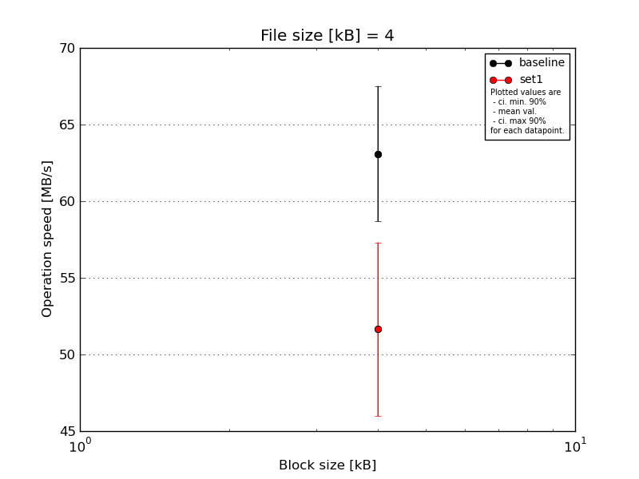
|
File size [kB] |
Block size [kB] |
| 4 |
| baseline | 4 | 64.05 |
| 4 | 66.12 |
| 4 | 60.28 |
| 4 | 56.73 |
| 4 | 68.32 |
| mean val. |
63.1 |
| standard dev. |
4.63 |
| ci. min. 90% |
58.68 |
| ci. max 90% |
67.51 |
| geom. mean |
62.96 |
| median |
64.05 |
| first quartile |
60.28 |
| third quartile |
66.12 |
| minimum |
56.73 |
| maximum |
68.32 |
| set1 | 4 | 56.73 |
| 4 | 42.03 |
| 4 | 55.76 |
| 4 | 53.58 |
| 4 | 50.13 |
| mean val. |
51.65 |
| standard dev. |
5.94 |
| ci. min. 90% |
45.98 |
| ci. max 90% |
57.31 |
| geom. mean |
51.35 |
| median |
53.58 |
| first quartile |
50.13 |
| third quartile |
55.76 |
| minimum |
42.03 |
| maximum |
56.73 |
| baseline set1 difference |
-18.15 % |
| ttest p-value |
0.0094 |
| ttest equality |
DIFF |
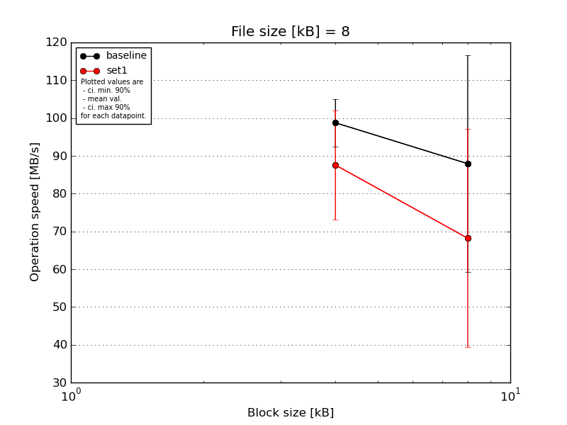
|
File size [kB] |
Block size [kB] |
| 4 |
8 |
| baseline | 8 | 106.8 | 83.21 |
| 8 | 101.51 | 100.27 |
| 8 | 101.51 | 110.03 |
| 8 | 92.88 | 108.57 |
| 8 | 91.07 | 37.54 |
| mean val. |
98.75 |
87.92 |
| standard dev. |
6.59 |
30.12 |
| ci. min. 90% |
92.47 |
59.21 |
| ci. max 90% |
105.03 |
116.64 |
| geom. mean |
98.58 |
82.15 |
| median |
101.51 |
100.27 |
| first quartile |
92.88 |
83.21 |
| third quartile |
101.51 |
108.57 |
| minimum |
91.07 |
37.54 |
| maximum |
106.8 |
110.03 |
| set1 | 8 | 84.06 | 108.21 |
| 8 | 75.19 | 67.31 |
| 8 | 104.09 | 43.64 |
| 8 | 71.73 | 34.87 |
| 8 | 102.78 | 86.96 |
| mean val. |
87.57 |
68.2 |
| standard dev. |
15.17 |
30.28 |
| ci. min. 90% |
73.11 |
39.33 |
| ci. max 90% |
102.04 |
97.07 |
| geom. mean |
86.53 |
62.63 |
| median |
84.06 |
67.31 |
| first quartile |
75.19 |
43.64 |
| third quartile |
102.78 |
86.96 |
| minimum |
71.73 |
34.87 |
| maximum |
104.09 |
108.21 |
| baseline set1 difference |
-11.32 % |
-22.43 % |
| ttest p-value |
0.169 |
0.3319 |
| ttest equality |
SAME |
SAME |
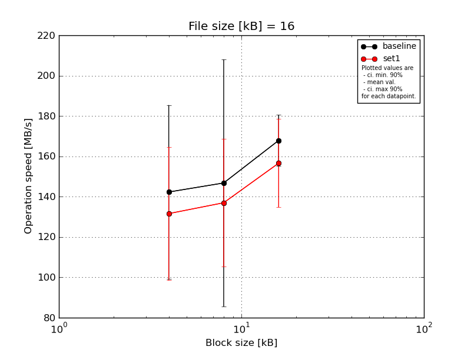
|
File size [kB] |
Block size [kB] |
| 4 |
8 |
16 |
| baseline | 16 | 141.91 | 190.62 | 175.32 |
| 16 | 179.15 | 177.7 | 159.53 |
| 16 | 67.02 | 183.67 | 173.92 |
| 16 | 147.67 | 146.02 | 149.01 |
| 16 | 175.79 | 35.99 | 181.64 |
| mean val. |
142.31 |
146.8 |
167.88 |
| standard dev. |
45.21 |
64.25 |
13.29 |
| ci. min. 90% |
99.21 |
85.54 |
155.21 |
| ci. max 90% |
185.41 |
208.06 |
180.56 |
| geom. mean |
134.63 |
126.74 |
167.45 |
| median |
147.67 |
177.7 |
173.92 |
| first quartile |
141.91 |
146.02 |
159.53 |
| third quartile |
175.79 |
183.67 |
175.32 |
| minimum |
67.02 |
35.99 |
149.01 |
| maximum |
179.15 |
190.62 |
181.64 |
| set1 | 16 | 175.79 | 164.33 | 179.65 |
| 16 | 153.19 | 159.53 | 162.7 |
| 16 | 134.62 | 100.85 | 164.74 |
| 16 | 100.24 | 100.7 | 118.34 |
| 16 | 94.19 | 159.53 | 157.61 |
| mean val. |
131.61 |
136.99 |
156.61 |
| standard dev. |
34.68 |
33.11 |
22.91 |
| ci. min. 90% |
98.54 |
105.42 |
134.76 |
| ci. max 90% |
164.67 |
168.56 |
178.45 |
| geom. mean |
127.9 |
133.54 |
155.12 |
| median |
134.62 |
159.53 |
162.7 |
| first quartile |
100.24 |
100.85 |
157.61 |
| third quartile |
153.19 |
159.53 |
164.74 |
| minimum |
94.19 |
100.7 |
118.34 |
| maximum |
175.79 |
164.33 |
179.65 |
| baseline set1 difference |
-7.52 % |
-6.68 % |
-6.72 % |
| ttest p-value |
0.6855 |
0.7692 |
0.369 |
| ttest equality |
SAME |
SAME |
SAME |
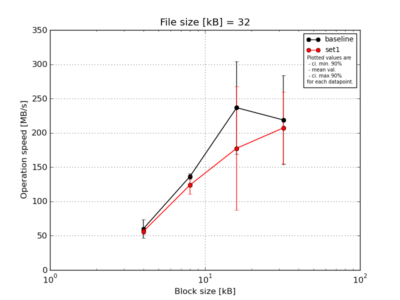
|
File size [kB] |
Block size [kB] |
| 4 |
8 |
16 |
32 |
| baseline | 32 | 84.9 | 134.18 | 283.82 | 284.44 |
| 32 | 54.26 | 132.42 | 246.0 | 151.74 |
| 32 | 50.47 | 142.65 | 264.36 | 269.25 |
| 32 | 56.4 | 134.18 | 276.64 | 249.75 |
| 32 | 54.53 | 138.88 | 112.72 | 138.88 |
| mean val. |
60.11 |
136.46 |
236.71 |
218.81 |
| standard dev. |
14.02 |
4.21 |
70.78 |
68.37 |
| ci. min. 90% |
46.74 |
132.45 |
169.23 |
153.63 |
| ci. max 90% |
73.48 |
140.48 |
304.19 |
283.99 |
| geom. mean |
59.0 |
136.41 |
224.92 |
209.45 |
| median |
54.53 |
134.18 |
264.36 |
249.75 |
| first quartile |
54.26 |
134.18 |
246.0 |
151.74 |
| third quartile |
56.4 |
138.88 |
276.64 |
269.25 |
| minimum |
50.47 |
132.42 |
112.72 |
138.88 |
| maximum |
84.9 |
142.65 |
283.82 |
284.44 |
| set1 | 32 | 62.24 | 134.74 | 47.07 | 298.02 |
| 32 | 53.5 | 119.18 | 201.71 | 150.34 |
| 32 | 53.5 | 102.1 | 117.47 | 197.75 |
| 32 | 55.31 | 129.16 | 242.36 | 188.1 |
| 32 | 56.62 | 134.6 | 278.99 | 201.71 |
| mean val. |
56.24 |
123.95 |
177.52 |
207.19 |
| standard dev. |
3.61 |
13.76 |
94.49 |
54.69 |
| ci. min. 90% |
52.8 |
110.84 |
87.44 |
155.04 |
| ci. max 90% |
59.67 |
137.07 |
267.6 |
259.33 |
| geom. mean |
56.15 |
123.3 |
149.79 |
201.98 |
| median |
55.31 |
129.16 |
201.71 |
197.75 |
| first quartile |
53.5 |
119.18 |
117.47 |
188.1 |
| third quartile |
56.62 |
134.6 |
242.36 |
201.71 |
| minimum |
53.5 |
102.1 |
47.07 |
150.34 |
| maximum |
62.24 |
134.74 |
278.99 |
298.02 |
| baseline set1 difference |
-6.45 % |
-9.17 % |
-25.01 % |
-5.31 % |
| ttest p-value |
0.566 |
0.0878 |
0.2948 |
0.7741 |
| ttest equality |
SAME |
DIFF |
SAME |
SAME |
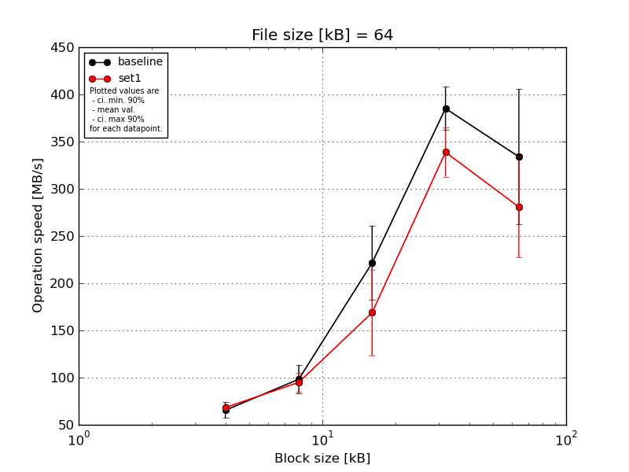
|
File size [kB] |
Block size [kB] |
| 4 |
8 |
16 |
32 |
64 |
| baseline | 64 | 72.84 | 101.3 | 252.84 | 419.56 | 390.79 |
| 64 | 52.61 | 100.02 | 154.31 | 361.18 | 207.1 |
| 64 | 67.86 | 103.83 | 257.05 | 390.79 | 387.9 |
| 64 | 60.74 | 114.48 | 217.76 | 363.18 | 328.99 |
| 64 | 73.08 | 71.51 | 225.63 | 390.79 | 354.82 |
| mean val. |
65.43 |
98.23 |
221.52 |
385.1 |
333.92 |
| standard dev. |
8.74 |
15.98 |
41.21 |
24.01 |
75.32 |
| ci. min. 90% |
57.09 |
82.99 |
182.23 |
362.21 |
262.11 |
| ci. max 90% |
73.76 |
113.47 |
260.8 |
407.99 |
405.73 |
| geom. mean |
64.93 |
97.06 |
218.04 |
384.51 |
325.69 |
| median |
67.86 |
101.3 |
225.63 |
390.79 |
354.82 |
| first quartile |
60.74 |
100.02 |
217.76 |
363.18 |
328.99 |
| third quartile |
72.84 |
103.83 |
252.84 |
390.79 |
387.9 |
| minimum |
52.61 |
71.51 |
154.31 |
361.18 |
207.1 |
| maximum |
73.08 |
114.48 |
257.05 |
419.56 |
390.79 |
| set1 | 64 | 70.4 | 83.44 | 234.94 | 383.36 | 304.89 |
| 64 | 68.75 | 94.4 | 130.17 | 314.02 | 271.71 |
| 64 | 68.02 | 91.25 | 130.76 | 334.02 | 337.46 |
| 64 | 66.35 | 94.0 | 144.05 | 341.86 | 189.3 |
| 64 | 67.93 | 111.61 | 204.19 | 320.54 | 300.35 |
| mean val. |
68.29 |
94.94 |
168.82 |
338.76 |
280.74 |
| standard dev. |
1.47 |
10.31 |
47.9 |
27.23 |
56.19 |
| ci. min. 90% |
66.89 |
85.11 |
123.15 |
312.8 |
227.17 |
| ci. max 90% |
69.69 |
104.77 |
214.49 |
364.72 |
334.31 |
| geom. mean |
68.28 |
94.51 |
163.72 |
337.92 |
275.58 |
| median |
68.02 |
94.0 |
144.05 |
334.02 |
300.35 |
| first quartile |
67.93 |
91.25 |
130.76 |
320.54 |
271.71 |
| third quartile |
68.75 |
94.4 |
204.19 |
341.86 |
304.89 |
| minimum |
66.35 |
83.44 |
130.17 |
314.02 |
189.3 |
| maximum |
70.4 |
111.61 |
234.94 |
383.36 |
337.46 |
| baseline set1 difference |
4.38 % |
-3.35 % |
-23.79 % |
-12.03 % |
-15.93 % |
| ttest p-value |
0.4908 |
0.7091 |
0.0992 |
0.0213 |
0.2413 |
| ttest equality |
SAME |
SAME |
DIFF |
DIFF |
SAME |

|
File size [kB] |
Block size [kB] |
| 4 |
8 |
16 |
32 |
64 |
128 |
| baseline | 128 | 76.12 | 114.38 | 180.61 | 367.46 | 557.87 | 516.64 |
| 128 | 71.23 | 113.22 | 170.07 | 231.49 | 419.5 | 307.9 |
| 128 | 80.65 | 111.82 | 180.68 | 260.48 | 340.71 | 493.77 |
| 128 | 59.3 | 109.16 | 172.7 | 324.67 | 457.97 | 429.46 |
| 128 | 72.42 | 107.66 | 183.52 | 260.35 | 496.11 | 433.72 |
| mean val. |
71.94 |
111.25 |
177.52 |
288.89 |
454.43 |
436.3 |
| standard dev. |
7.97 |
2.79 |
5.79 |
55.61 |
81.55 |
81.08 |
| ci. min. 90% |
64.35 |
108.58 |
171.99 |
235.87 |
376.68 |
358.99 |
| ci. max 90% |
79.54 |
113.91 |
183.04 |
341.91 |
532.18 |
513.6 |
| geom. mean |
71.57 |
111.22 |
177.44 |
284.78 |
448.34 |
429.59 |
| median |
72.42 |
111.82 |
180.61 |
260.48 |
457.97 |
433.72 |
| first quartile |
71.23 |
109.16 |
172.7 |
260.35 |
419.5 |
429.46 |
| third quartile |
76.12 |
113.22 |
180.68 |
324.67 |
496.11 |
493.77 |
| minimum |
59.3 |
107.66 |
170.07 |
231.49 |
340.71 |
307.9 |
| maximum |
80.65 |
114.38 |
183.52 |
367.46 |
557.87 |
516.64 |
| set1 | 128 | 80.81 | 116.18 | 178.34 | 367.71 | 510.1 | 413.87 |
| 128 | 73.31 | 110.03 | 178.28 | 328.95 | 545.67 | 471.56 |
| 128 | 70.91 | 107.75 | 166.03 | 341.38 | 497.99 | 499.89 |
| 128 | 71.02 | 106.57 | 121.93 | 230.68 | 512.1 | 471.56 |
| 128 | 77.88 | 83.33 | 210.15 | 351.21 | 504.22 | 490.08 |
| mean val. |
74.79 |
104.77 |
170.95 |
323.99 |
514.02 |
469.39 |
| standard dev. |
4.39 |
12.55 |
31.91 |
54.05 |
18.53 |
33.36 |
| ci. min. 90% |
70.6 |
92.81 |
140.53 |
272.45 |
496.35 |
437.59 |
| ci. max 90% |
78.98 |
116.73 |
201.37 |
375.52 |
531.69 |
501.19 |
| geom. mean |
74.68 |
104.11 |
168.36 |
319.81 |
513.76 |
468.4 |
| median |
73.31 |
107.75 |
178.28 |
341.38 |
510.1 |
471.56 |
| first quartile |
71.02 |
106.57 |
166.03 |
328.95 |
504.22 |
471.56 |
| third quartile |
77.88 |
110.03 |
178.34 |
351.21 |
512.1 |
490.08 |
| minimum |
70.91 |
83.33 |
121.93 |
230.68 |
497.99 |
413.87 |
| maximum |
80.81 |
116.18 |
210.15 |
367.71 |
545.67 |
499.89 |
| baseline set1 difference |
3.95 % |
-5.82 % |
-3.7 % |
12.15 % |
13.11 % |
7.59 % |
| ttest p-value |
0.5043 |
0.2926 |
0.6626 |
0.3412 |
0.1498 |
0.4232 |
| ttest equality |
SAME |
SAME |
SAME |
SAME |
SAME |
SAME |
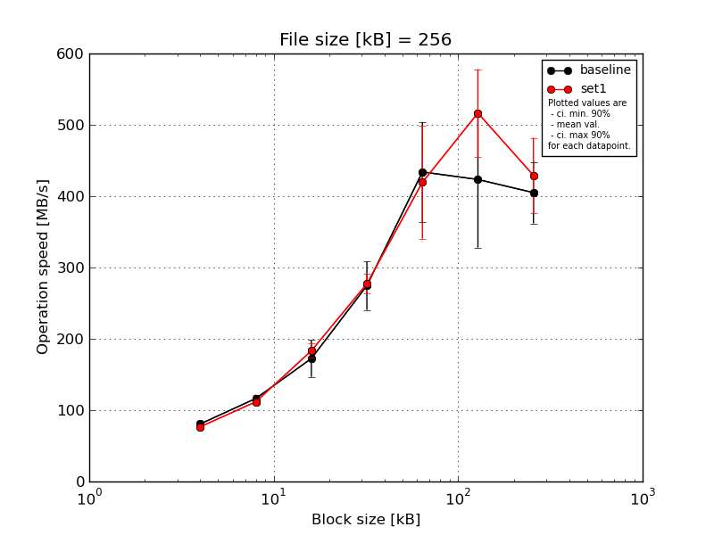
|
File size [kB] |
Block size [kB] |
| 4 |
8 |
16 |
32 |
64 |
128 |
256 |
| baseline | 256 | 82.54 | 122.67 | 201.93 | 278.45 | 548.47 | 592.48 | 402.55 |
| 256 | 81.62 | 120.65 | 134.47 | 295.47 | 353.55 | 388.25 | 410.59 |
| 256 | 81.94 | 108.22 | 193.51 | 310.89 | 389.98 | 409.95 | 399.49 |
| 256 | 78.55 | 113.95 | 159.43 | 270.54 | 437.12 | 325.56 | 342.47 |
| 256 | 78.97 | 116.55 | 172.53 | 217.19 | 440.8 | 400.71 | 469.83 |
| mean val. |
80.72 |
116.41 |
172.37 |
274.51 |
433.99 |
423.39 |
404.99 |
| standard dev. |
1.83 |
5.71 |
27.04 |
35.63 |
73.43 |
100.11 |
45.22 |
| ci. min. 90% |
78.98 |
110.97 |
146.6 |
240.54 |
363.98 |
327.94 |
361.87 |
| ci. max 90% |
82.47 |
121.85 |
198.15 |
308.48 |
504.0 |
518.84 |
448.1 |
| geom. mean |
80.71 |
116.3 |
170.6 |
272.52 |
429.24 |
414.95 |
402.96 |
| median |
81.62 |
116.55 |
172.53 |
278.45 |
437.12 |
400.71 |
402.55 |
| first quartile |
78.97 |
113.95 |
159.43 |
270.54 |
389.98 |
388.25 |
399.49 |
| third quartile |
81.94 |
120.65 |
193.51 |
295.47 |
440.8 |
409.95 |
410.59 |
| minimum |
78.55 |
108.22 |
134.47 |
217.19 |
353.55 |
325.56 |
342.47 |
| maximum |
82.54 |
122.67 |
201.93 |
310.89 |
548.47 |
592.48 |
469.83 |
| set1 | 256 | 78.74 | 115.42 | 181.29 | 256.64 | 514.56 | 568.08 | 407.09 |
| 256 | 76.19 | 104.43 | 200.65 | 274.44 | 342.92 | 554.57 | 392.46 |
| 256 | 74.25 | 113.34 | 179.1 | 273.51 | 343.82 | 410.43 | 391.87 |
| 256 | 76.59 | 116.11 | 172.53 | 287.38 | 499.13 | 549.34 | 430.13 |
| 256 | 77.83 | 109.31 | 182.46 | 294.15 | 396.77 | 500.08 | 524.08 |
| mean val. |
76.72 |
111.72 |
183.21 |
277.22 |
419.44 |
516.5 |
429.12 |
| standard dev. |
1.71 |
4.86 |
10.48 |
14.45 |
82.9 |
64.63 |
55.31 |
| ci. min. 90% |
75.09 |
107.09 |
173.21 |
263.45 |
340.41 |
454.88 |
376.4 |
| ci. max 90% |
78.35 |
116.36 |
193.2 |
290.99 |
498.47 |
578.12 |
481.85 |
| geom. mean |
76.71 |
111.63 |
182.97 |
276.92 |
412.99 |
512.98 |
426.5 |
| median |
76.59 |
113.34 |
181.29 |
274.44 |
396.77 |
549.34 |
407.09 |
| first quartile |
76.19 |
109.31 |
179.1 |
273.51 |
343.82 |
500.08 |
392.46 |
| third quartile |
77.83 |
115.42 |
182.46 |
287.38 |
499.13 |
554.57 |
430.13 |
| minimum |
74.25 |
104.43 |
172.53 |
256.64 |
342.92 |
410.43 |
391.87 |
| maximum |
78.74 |
116.11 |
200.65 |
294.15 |
514.56 |
568.08 |
524.08 |
| baseline set1 difference |
-4.96 % |
-4.03 % |
6.28 % |
0.99 % |
-3.35 % |
21.99 % |
5.96 % |
| ttest p-value |
0.0073 |
0.1994 |
0.4278 |
0.8786 |
0.7764 |
0.1187 |
0.4716 |
| ttest equality |
DIFF |
SAME |
SAME |
SAME |
SAME |
SAME |
SAME |
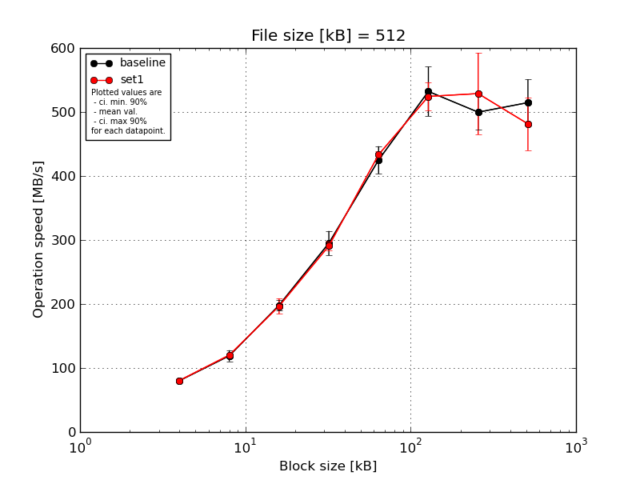
|
File size [kB] |
Block size [kB] |
| 4 |
8 |
16 |
32 |
64 |
128 |
256 |
512 |
| baseline | 512 | 82.28 | 123.33 | 209.11 | 300.67 | 449.28 | 520.28 | 505.48 | 564.39 |
| 512 | 80.45 | 104.14 | 191.07 | 276.24 | 411.46 | 529.74 | 474.81 | 486.83 |
| 512 | 82.09 | 125.53 | 198.73 | 305.63 | 434.39 | 550.03 | 515.55 | 545.73 |
| 512 | 76.78 | 116.71 | 202.1 | 273.07 | 393.33 | 475.24 | 536.52 | 477.95 |
| 512 | 79.71 | 125.63 | 189.55 | 319.7 | 437.01 | 585.5 | 466.36 | 498.51 |
| mean val. |
80.26 |
119.07 |
198.11 |
295.06 |
425.1 |
532.16 |
499.75 |
514.68 |
| standard dev. |
2.23 |
9.1 |
8.07 |
19.92 |
22.41 |
40.47 |
29.03 |
38.15 |
| ci. min. 90% |
78.14 |
110.39 |
190.42 |
276.07 |
403.73 |
493.58 |
472.07 |
478.31 |
| ci. max 90% |
82.38 |
127.75 |
205.8 |
314.06 |
446.46 |
570.74 |
527.42 |
551.05 |
| geom. mean |
80.23 |
118.78 |
197.98 |
294.52 |
424.62 |
530.92 |
499.07 |
513.57 |
| median |
80.45 |
123.33 |
198.73 |
300.67 |
434.39 |
529.74 |
505.48 |
498.51 |
| first quartile |
79.71 |
116.71 |
191.07 |
276.24 |
411.46 |
520.28 |
474.81 |
486.83 |
| third quartile |
82.09 |
125.53 |
202.1 |
305.63 |
437.01 |
550.03 |
515.55 |
545.73 |
| minimum |
76.78 |
104.14 |
189.55 |
273.07 |
393.33 |
475.24 |
466.36 |
477.95 |
| maximum |
82.28 |
125.63 |
209.11 |
319.7 |
449.28 |
585.5 |
536.52 |
564.39 |
| set1 | 512 | 85.75 | 123.98 | 204.74 | 293.44 | 432.96 | 544.04 | 624.19 | 552.35 |
| 512 | 79.22 | 118.4 | 191.79 | 297.77 | 433.31 | 518.1 | 571.46 | 444.42 |
| 512 | 80.17 | 118.46 | 176.66 | 279.03 | 425.49 | 552.49 | 482.13 | 473.95 |
| 512 | 77.34 | 118.01 | 202.59 | 293.56 | 435.11 | 509.17 | 500.54 | 449.28 |
| 512 | 80.57 | 122.37 | 207.64 | 289.87 | 440.5 | 498.04 | 465.54 | 487.28 |
| mean val. |
80.61 |
120.24 |
196.68 |
290.73 |
433.47 |
524.37 |
528.77 |
481.46 |
| standard dev. |
3.13 |
2.74 |
12.7 |
7.12 |
5.39 |
23.14 |
66.89 |
43.37 |
| ci. min. 90% |
77.62 |
117.63 |
184.58 |
283.95 |
428.34 |
502.31 |
464.99 |
440.11 |
| ci. max 90% |
83.59 |
122.85 |
208.79 |
297.52 |
438.61 |
546.42 |
592.54 |
522.8 |
| geom. mean |
80.56 |
120.22 |
196.35 |
290.66 |
433.45 |
523.96 |
525.5 |
479.96 |
| median |
80.17 |
118.46 |
202.59 |
293.44 |
433.31 |
518.1 |
500.54 |
473.95 |
| first quartile |
79.22 |
118.4 |
191.79 |
289.87 |
432.96 |
509.17 |
482.13 |
449.28 |
| third quartile |
80.57 |
122.37 |
204.74 |
293.56 |
435.11 |
544.04 |
571.46 |
487.28 |
| minimum |
77.34 |
118.01 |
176.66 |
279.03 |
425.49 |
498.04 |
465.54 |
444.42 |
| maximum |
85.75 |
123.98 |
207.64 |
297.77 |
440.5 |
552.49 |
624.19 |
552.35 |
| baseline set1 difference |
0.43 % |
0.98 % |
-0.72 % |
-1.47 % |
1.97 % |
-1.46 % |
5.81 % |
-6.46 % |
| ttest p-value |
0.8443 |
0.7899 |
0.8373 |
0.6596 |
0.4398 |
0.7182 |
0.3994 |
0.2343 |
| ttest equality |
SAME |
SAME |
SAME |
SAME |
SAME |
SAME |
SAME |
SAME |
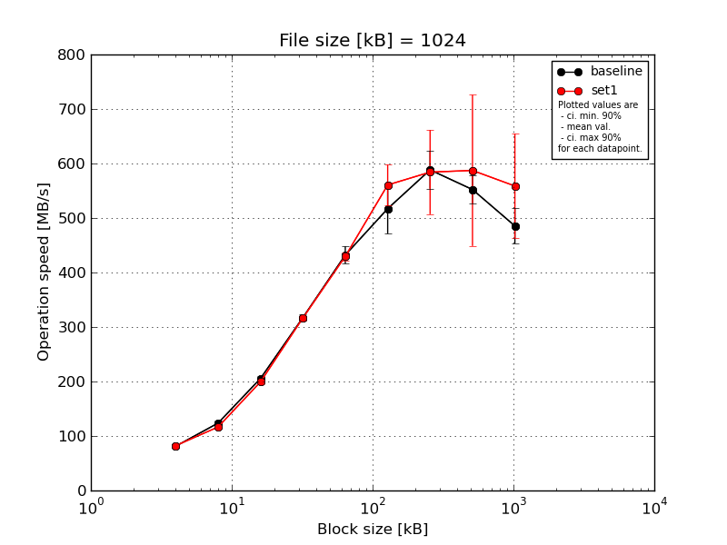
|
File size [kB] |
Block size [kB] |
| 4 |
8 |
16 |
32 |
64 |
128 |
256 |
512 |
1024 |
| baseline | 1024 | 81.5 | 130.0 | 209.82 | 310.07 | 447.4 | 526.87 | 563.39 | 580.06 | 506.33 |
| 1024 | 80.42 | 122.96 | 201.41 | 323.94 | 452.66 | 444.27 | 562.1 | 528.86 | 475.99 |
| 1024 | 81.79 | 124.98 | 210.67 | 321.55 | 422.27 | 577.98 | 645.99 | 581.35 | 517.06 |
| 1024 | 80.22 | 117.46 | 204.54 | 311.22 | 423.21 | 528.0 | 601.61 | 528.53 | 497.03 |
| 1024 | 82.17 | 123.03 | 201.41 | 319.89 | 415.12 | 508.41 | 568.5 | 542.26 | 430.86 |
| mean val. |
81.22 |
123.69 |
205.57 |
317.34 |
432.13 |
517.11 |
588.32 |
552.21 |
485.45 |
| standard dev. |
0.86 |
4.51 |
4.46 |
6.28 |
16.74 |
48.22 |
36.07 |
26.6 |
34.06 |
| ci. min. 90% |
80.41 |
119.39 |
201.31 |
311.34 |
416.17 |
471.14 |
553.93 |
526.85 |
452.98 |
| ci. max 90% |
82.04 |
127.99 |
209.83 |
323.33 |
448.09 |
563.08 |
622.71 |
577.57 |
517.92 |
| geom. mean |
81.22 |
123.62 |
205.53 |
317.29 |
431.87 |
515.26 |
587.46 |
551.7 |
484.46 |
| median |
81.5 |
123.03 |
204.54 |
319.89 |
423.21 |
526.87 |
568.5 |
542.26 |
497.03 |
| first quartile |
80.42 |
122.96 |
201.41 |
311.22 |
422.27 |
508.41 |
563.39 |
528.86 |
475.99 |
| third quartile |
81.79 |
124.98 |
209.82 |
321.55 |
447.4 |
528.0 |
601.61 |
580.06 |
506.33 |
| minimum |
80.22 |
117.46 |
201.41 |
310.07 |
415.12 |
444.27 |
562.1 |
528.53 |
430.86 |
| maximum |
82.17 |
130.0 |
210.67 |
323.94 |
452.66 |
577.98 |
645.99 |
581.35 |
517.06 |
| set1 | 1024 | 82.18 | 116.09 | 192.56 | 316.46 | 434.02 | 590.01 | 727.32 | 846.0 | 736.38 |
| 1024 | 81.97 | 114.59 | 198.29 | 321.95 | 437.64 | 570.13 | 554.96 | 512.83 | 522.99 |
| 1024 | 81.53 | 119.25 | 200.68 | 313.57 | 431.39 | 493.11 | 551.9 | 544.66 | 514.15 |
| 1024 | 83.38 | 115.15 | 202.35 | 319.47 | 417.02 | 564.98 | 526.01 | 504.56 | 489.71 |
| 1024 | 81.97 | 117.71 | 202.6 | 311.32 | 428.26 | 585.08 | 560.83 | 528.26 | 530.27 |
| mean val. |
82.21 |
116.56 |
199.3 |
316.55 |
429.67 |
560.66 |
584.2 |
587.26 |
558.7 |
| standard dev. |
0.7 |
1.91 |
4.14 |
4.3 |
7.87 |
39.14 |
81.11 |
145.45 |
100.5 |
| ci. min. 90% |
81.54 |
114.73 |
195.35 |
312.45 |
422.17 |
523.34 |
506.88 |
448.59 |
462.89 |
| ci. max 90% |
82.87 |
118.38 |
203.24 |
320.65 |
437.17 |
597.98 |
661.53 |
725.93 |
654.51 |
| geom. mean |
82.2 |
116.55 |
199.26 |
316.53 |
429.61 |
559.51 |
580.14 |
575.23 |
552.36 |
| median |
81.97 |
116.09 |
200.68 |
316.46 |
431.39 |
570.13 |
554.96 |
528.26 |
522.99 |
| first quartile |
81.97 |
115.15 |
198.29 |
313.57 |
428.26 |
564.98 |
551.9 |
512.83 |
514.15 |
| third quartile |
82.18 |
117.71 |
202.35 |
319.47 |
434.02 |
585.08 |
560.83 |
544.66 |
530.27 |
| minimum |
81.53 |
114.59 |
192.56 |
311.32 |
417.02 |
493.11 |
526.01 |
504.56 |
489.71 |
| maximum |
83.38 |
119.25 |
202.6 |
321.95 |
437.64 |
590.01 |
727.32 |
846.0 |
736.38 |
| baseline set1 difference |
1.21 % |
-5.76 % |
-3.05 % |
-0.25 % |
-0.57 % |
8.42 % |
-0.7 % |
6.35 % |
15.09 % |
| ttest p-value |
0.0811 |
0.0116 |
0.0501 |
0.8243 |
0.7733 |
0.1555 |
0.92 |
0.6105 |
0.1613 |
| ttest equality |
DIFF |
DIFF |
DIFF |
SAME |
SAME |
SAME |
SAME |
SAME |
SAME |
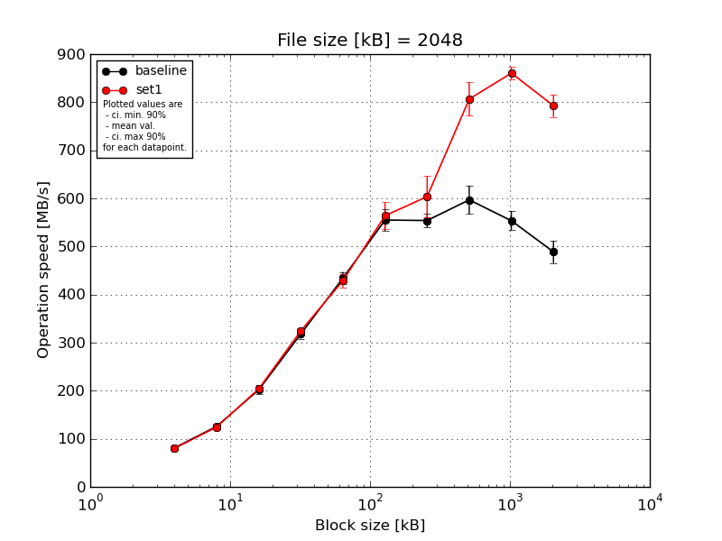
|
File size [kB] |
Block size [kB] |
| 4 |
8 |
16 |
32 |
64 |
128 |
256 |
512 |
1024 |
2048 |
| baseline | 2048 | 82.03 | 125.16 | 209.07 | 325.57 | 455.46 | 590.84 | 579.89 | 622.49 | 580.9 | 526.6 |
| 2048 | 80.73 | 119.29 | 192.53 | 323.21 | 426.25 | 559.62 | 550.95 | 565.77 | 547.35 | 478.12 |
| 2048 | 81.27 | 123.37 | 209.05 | 324.46 | 437.14 | 550.04 | 548.25 | 625.56 | 556.95 | 499.36 |
| 2048 | 81.05 | 130.84 | 208.92 | 314.91 | 420.0 | 543.34 | 549.18 | 561.34 | 523.44 | 470.03 |
| 2048 | 80.79 | 130.21 | 189.56 | 301.71 | 431.67 | 529.36 | 541.59 | 609.38 | 558.99 | 469.61 |
| mean val. |
81.17 |
125.77 |
201.83 |
317.97 |
434.11 |
554.64 |
553.97 |
596.91 |
553.52 |
488.74 |
| standard dev. |
0.53 |
4.84 |
9.9 |
10.02 |
13.53 |
23.04 |
14.92 |
31.09 |
20.82 |
24.36 |
| ci. min. 90% |
80.67 |
121.16 |
192.39 |
308.42 |
421.21 |
532.68 |
539.75 |
567.27 |
533.68 |
465.52 |
| ci. max 90% |
81.67 |
130.38 |
211.27 |
327.52 |
447.0 |
576.61 |
568.19 |
626.55 |
573.37 |
511.97 |
| geom. mean |
81.17 |
125.7 |
201.63 |
317.84 |
433.94 |
554.26 |
553.81 |
596.25 |
553.21 |
488.27 |
| median |
81.05 |
125.16 |
208.92 |
323.21 |
431.67 |
550.04 |
549.18 |
609.38 |
556.95 |
478.12 |
| first quartile |
80.79 |
123.37 |
192.53 |
314.91 |
426.25 |
543.34 |
548.25 |
565.77 |
547.35 |
470.03 |
| third quartile |
81.27 |
130.21 |
209.05 |
324.46 |
437.14 |
559.62 |
550.95 |
622.49 |
558.99 |
499.36 |
| minimum |
80.73 |
119.29 |
189.56 |
301.71 |
420.0 |
529.36 |
541.59 |
561.34 |
523.44 |
469.61 |
| maximum |
82.03 |
130.84 |
209.07 |
325.57 |
455.46 |
590.84 |
579.89 |
625.56 |
580.9 |
526.6 |
| set1 | 2048 | 80.77 | 125.05 | 207.67 | 329.81 | 407.57 | 527.99 | 657.68 | 866.52 | 875.29 | 798.09 |
| 2048 | 80.25 | 117.43 | 200.9 | 326.48 | 433.93 | 599.88 | 625.98 | 795.52 | 866.16 | 759.03 |
| 2048 | 79.82 | 134.1 | 207.34 | 320.06 | 447.23 | 573.23 | 616.14 | 768.34 | 845.3 | 818.02 |
| 2048 | 79.54 | 118.54 | 201.88 | 327.98 | 432.43 | 540.09 | 540.41 | 792.36 | 847.09 | 810.98 |
| 2048 | 79.65 | 126.93 | 201.43 | 317.81 | 423.03 | 578.17 | 578.05 | 810.35 | 868.4 | 777.31 |
| mean val. |
80.01 |
124.41 |
203.84 |
324.43 |
428.84 |
563.87 |
603.65 |
806.62 |
860.45 |
792.69 |
| standard dev. |
0.51 |
6.78 |
3.36 |
5.21 |
14.69 |
29.33 |
45.36 |
36.72 |
13.45 |
24.37 |
| ci. min. 90% |
79.52 |
117.95 |
200.64 |
319.46 |
414.83 |
535.91 |
560.41 |
771.61 |
847.62 |
769.45 |
| ci. max 90% |
80.49 |
130.87 |
207.05 |
329.4 |
442.84 |
591.84 |
646.89 |
841.63 |
873.28 |
815.92 |
| geom. mean |
80.01 |
124.26 |
203.82 |
324.39 |
428.64 |
563.26 |
602.27 |
805.97 |
860.37 |
792.38 |
| median |
79.82 |
125.05 |
201.88 |
326.48 |
432.43 |
573.23 |
616.14 |
795.52 |
866.16 |
798.09 |
| first quartile |
79.65 |
118.54 |
201.43 |
320.06 |
423.03 |
540.09 |
578.05 |
792.36 |
847.09 |
777.31 |
| third quartile |
80.25 |
126.93 |
207.34 |
327.98 |
433.93 |
578.17 |
625.98 |
810.35 |
868.4 |
810.98 |
| minimum |
79.54 |
117.43 |
200.9 |
317.81 |
407.57 |
527.99 |
540.41 |
768.34 |
845.3 |
759.03 |
| maximum |
80.77 |
134.1 |
207.67 |
329.81 |
447.23 |
599.88 |
657.68 |
866.52 |
875.29 |
818.02 |
| baseline set1 difference |
-1.44 % |
-1.08 % |
1.0 % |
2.03 % |
-1.21 % |
1.66 % |
8.97 % |
35.13 % |
55.45 % |
62.19 % |
| ttest p-value |
0.0073 |
0.7238 |
0.6777 |
0.237 |
0.5715 |
0.595 |
0.0484 |
0.0 |
0.0 |
0.0 |
| ttest equality |
DIFF |
SAME |
SAME |
SAME |
SAME |
SAME |
DIFF |
DIFF |
DIFF |
DIFF |
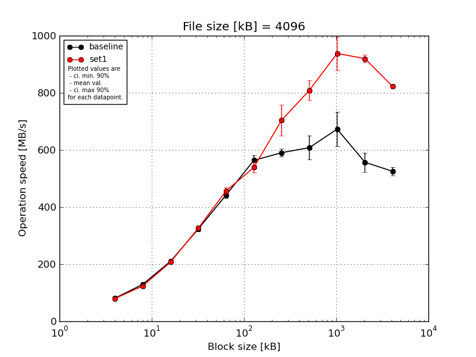
|
File size [kB] |
Block size [kB] |
| 4 |
8 |
16 |
32 |
64 |
128 |
256 |
512 |
1024 |
2048 |
4096 |
| baseline | 4096 | 81.86 | 136.18 | 214.65 | 330.74 | 453.1 | 594.27 | 613.32 | 664.24 | 743.22 | 601.86 | 537.34 |
| 4096 | 83.34 | 123.82 | 212.25 | 328.73 | 435.34 | 543.32 | 578.03 | 614.91 | 644.76 | 526.38 | 537.42 |
| 4096 | 77.93 | 131.13 | 208.06 | 327.2 | 449.23 | 563.45 | 594.27 | 629.73 | 641.65 | 532.19 | 528.69 |
| 4096 | 81.09 | 134.85 | 208.83 | 318.29 | 426.45 | 558.18 | 585.9 | 583.52 | 735.01 | 587.28 | 502.57 |
| 4096 | 81.47 | 121.96 | 207.49 | 311.45 | 447.23 | 558.57 | 580.13 | 548.03 | 599.7 | 537.42 | 519.08 |
| mean val. |
81.14 |
129.59 |
210.26 |
323.28 |
442.27 |
563.56 |
590.33 |
608.09 |
672.87 |
557.03 |
525.02 |
| standard dev. |
1.99 |
6.42 |
3.07 |
8.15 |
11.05 |
18.75 |
14.31 |
44.38 |
63.1 |
34.87 |
14.65 |
| ci. min. 90% |
79.25 |
123.46 |
207.33 |
315.52 |
431.73 |
545.68 |
576.69 |
565.77 |
612.71 |
523.78 |
511.06 |
| ci. max 90% |
83.03 |
135.71 |
213.19 |
331.05 |
452.81 |
581.43 |
603.97 |
650.4 |
733.03 |
590.27 |
538.99 |
| geom. mean |
81.12 |
129.46 |
210.24 |
323.2 |
442.16 |
563.31 |
590.19 |
606.78 |
670.52 |
556.16 |
524.85 |
| median |
81.47 |
131.13 |
208.83 |
327.2 |
447.23 |
558.57 |
585.9 |
614.91 |
644.76 |
537.42 |
528.69 |
| first quartile |
81.09 |
123.82 |
208.06 |
318.29 |
435.34 |
558.18 |
580.13 |
583.52 |
641.65 |
532.19 |
519.08 |
| third quartile |
81.86 |
134.85 |
212.25 |
328.73 |
449.23 |
563.45 |
594.27 |
629.73 |
735.01 |
587.28 |
537.34 |
| minimum |
77.93 |
121.96 |
207.49 |
311.45 |
426.45 |
543.32 |
578.03 |
548.03 |
599.7 |
526.38 |
502.57 |
| maximum |
83.34 |
136.18 |
214.65 |
330.74 |
453.1 |
594.27 |
613.32 |
664.24 |
743.22 |
601.86 |
537.42 |
| set1 | 4096 | 80.49 | 130.1 | 209.26 | 323.91 | 468.27 | 519.61 | 673.38 | 794.12 | 939.17 | 923.81 | 829.37 |
| 4096 | 79.91 | 119.69 | 202.94 | 329.59 | 462.91 | 552.34 | 662.93 | 790.04 | 925.96 | 920.57 | 818.69 |
| 4096 | 79.84 | 121.79 | 210.93 | 327.09 | 465.05 | 555.03 | 800.64 | 873.91 | 1040.27 | 934.57 | 818.33 |
| 4096 | 79.89 | 124.67 | 208.79 | 326.93 | 446.13 | 551.41 | 676.7 | 794.12 | 881.81 | 896.04 | 826.11 |
| 4096 | 78.82 | 121.67 | 205.04 | 323.68 | 440.67 | 515.26 | 705.85 | 792.09 | 901.91 | 923.76 | 818.49 |
| mean val. |
79.79 |
123.58 |
207.39 |
326.24 |
456.61 |
538.73 |
703.9 |
808.86 |
937.82 |
919.75 |
822.2 |
| standard dev. |
0.6 |
4.05 |
3.29 |
2.47 |
12.36 |
19.54 |
56.37 |
36.41 |
61.37 |
14.28 |
5.19 |
| ci. min. 90% |
79.21 |
119.72 |
204.26 |
323.88 |
444.83 |
520.1 |
650.15 |
774.15 |
879.32 |
906.14 |
817.25 |
| ci. max 90% |
80.37 |
127.45 |
210.53 |
328.59 |
468.39 |
557.36 |
757.65 |
843.57 |
996.33 |
933.36 |
827.15 |
| geom. mean |
79.79 |
123.53 |
207.37 |
326.23 |
456.47 |
538.44 |
702.19 |
808.23 |
936.28 |
919.66 |
822.18 |
| median |
79.89 |
121.79 |
208.79 |
326.93 |
462.91 |
551.41 |
676.7 |
794.12 |
925.96 |
923.76 |
818.69 |
| first quartile |
79.84 |
121.67 |
205.04 |
323.91 |
446.13 |
519.61 |
673.38 |
792.09 |
901.91 |
920.57 |
818.49 |
| third quartile |
79.91 |
124.67 |
209.26 |
327.09 |
465.05 |
552.34 |
705.85 |
794.12 |
939.17 |
923.81 |
826.11 |
| minimum |
78.82 |
119.69 |
202.94 |
323.68 |
440.67 |
515.26 |
662.93 |
790.04 |
881.81 |
896.04 |
818.33 |
| maximum |
80.49 |
130.1 |
210.93 |
329.59 |
468.27 |
555.03 |
800.64 |
873.91 |
1040.27 |
934.57 |
829.37 |
| baseline set1 difference |
-1.66 % |
-4.63 % |
-1.36 % |
0.91 % |
3.24 % |
-4.41 % |
19.24 % |
33.02 % |
39.38 % |
65.12 % |
56.6 % |
| ttest p-value |
0.184 |
0.1151 |
0.1925 |
0.4599 |
0.0891 |
0.0745 |
0.0024 |
0.0001 |
0.0001 |
0.0 |
0.0 |
| ttest equality |
SAME |
SAME |
SAME |
SAME |
DIFF |
DIFF |
DIFF |
DIFF |
DIFF |
DIFF |
DIFF |
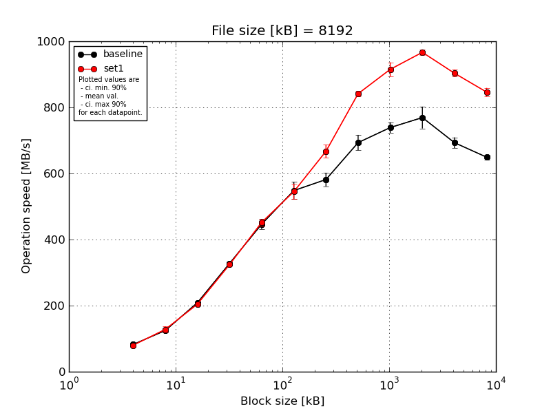
|
File size [kB] |
Block size [kB] |
| 4 |
8 |
16 |
32 |
64 |
128 |
256 |
512 |
1024 |
2048 |
4096 |
8192 |
| baseline | 8192 | 83.32 | 130.43 | 214.73 | 336.33 | 455.69 | 580.09 | 605.27 | 732.6 | 735.23 | 776.56 | 716.98 | 662.41 |
| 8192 | 82.83 | 123.85 | 209.98 | 326.29 | 457.88 | 531.6 | 581.14 | 686.75 | 756.65 | 746.69 | 695.06 | 651.84 |
| 8192 | 82.53 | 124.03 | 208.82 | 326.42 | 457.2 | 536.95 | 557.18 | 699.43 | 755.14 | 725.22 | 697.29 | 647.62 |
| 8192 | 80.23 | 121.34 | 202.77 | 324.74 | 442.14 | 574.14 | 600.96 | 669.4 | 730.26 | 815.48 | 685.46 | 643.14 |
| 8192 | 83.43 | 123.63 | 208.17 | 325.07 | 420.37 | 518.1 | 563.81 | 678.71 | 717.35 | 782.25 | 670.69 | 641.33 |
| mean val. |
82.47 |
124.66 |
208.89 |
327.77 |
446.65 |
548.17 |
581.67 |
693.38 |
738.93 |
769.24 |
693.1 |
649.27 |
| standard dev. |
1.3 |
3.41 |
4.28 |
4.84 |
16.05 |
27.38 |
21.5 |
24.54 |
16.82 |
34.67 |
16.97 |
8.41 |
| ci. min. 90% |
81.23 |
121.41 |
204.81 |
323.15 |
431.35 |
522.07 |
561.18 |
669.98 |
722.89 |
736.19 |
676.91 |
641.25 |
| ci. max 90% |
83.71 |
127.91 |
212.97 |
332.39 |
461.95 |
574.28 |
602.17 |
716.78 |
754.96 |
802.29 |
709.28 |
657.28 |
| geom. mean |
82.46 |
124.62 |
208.86 |
327.74 |
446.42 |
547.63 |
581.35 |
693.04 |
738.77 |
768.62 |
692.93 |
649.23 |
| median |
82.83 |
123.85 |
208.82 |
326.29 |
455.69 |
536.95 |
581.14 |
686.75 |
735.23 |
776.56 |
695.06 |
647.62 |
| first quartile |
82.53 |
123.63 |
208.17 |
325.07 |
442.14 |
531.6 |
563.81 |
678.71 |
730.26 |
746.69 |
685.46 |
643.14 |
| third quartile |
83.32 |
124.03 |
209.98 |
326.42 |
457.2 |
574.14 |
600.96 |
699.43 |
755.14 |
782.25 |
697.29 |
651.84 |
| minimum |
80.23 |
121.34 |
202.77 |
324.74 |
420.37 |
518.1 |
557.18 |
669.4 |
717.35 |
725.22 |
670.69 |
641.33 |
| maximum |
83.43 |
130.43 |
214.73 |
336.33 |
457.88 |
580.09 |
605.27 |
732.6 |
756.65 |
815.48 |
716.98 |
662.41 |
| set1 | 8192 | 80.7 | 120.96 | 202.4 | 322.19 | 461.52 | 583.73 | 675.67 | 844.33 | 913.97 | 963.63 | 899.49 | 854.07 |
| 8192 | 80.25 | 139.16 | 205.56 | 320.98 | 456.52 | 544.21 | 679.59 | 828.67 | 888.02 | 961.53 | 897.78 | 825.0 |
| 8192 | 79.87 | 120.13 | 205.04 | 323.94 | 458.58 | 521.41 | 637.2 | 841.47 | 938.62 | 980.5 | 922.92 | 853.07 |
| 8192 | 79.94 | 138.47 | 205.69 | 329.94 | 447.63 | 547.87 | 687.58 | 841.39 | 935.79 | 971.25 | 897.57 | 841.3 |
| 8192 | 79.29 | 121.76 | 204.0 | 324.13 | 436.18 | 528.02 | 655.63 | 850.97 | 899.27 | 956.24 | 898.77 | 857.71 |
| mean val. |
80.01 |
128.1 |
204.54 |
324.24 |
452.08 |
545.05 |
667.13 |
841.37 |
915.13 |
966.63 |
903.3 |
846.23 |
| standard dev. |
0.52 |
9.8 |
1.37 |
3.44 |
10.29 |
24.26 |
20.46 |
8.1 |
22.17 |
9.44 |
10.99 |
13.37 |
| ci. min. 90% |
79.52 |
118.75 |
203.23 |
320.95 |
442.27 |
521.92 |
647.63 |
833.65 |
894.0 |
957.63 |
892.82 |
833.49 |
| ci. max 90% |
80.51 |
137.44 |
205.84 |
327.52 |
461.9 |
568.18 |
686.64 |
849.09 |
936.27 |
975.63 |
913.79 |
858.98 |
| geom. mean |
80.01 |
127.8 |
204.53 |
324.22 |
451.99 |
544.62 |
666.88 |
841.34 |
914.92 |
966.59 |
903.25 |
846.15 |
| median |
79.94 |
121.76 |
205.04 |
323.94 |
456.52 |
544.21 |
675.67 |
841.47 |
913.97 |
963.63 |
898.77 |
853.07 |
| first quartile |
79.87 |
120.96 |
204.0 |
322.19 |
447.63 |
528.02 |
655.63 |
841.39 |
899.27 |
961.53 |
897.78 |
841.3 |
| third quartile |
80.25 |
138.47 |
205.56 |
324.13 |
458.58 |
547.87 |
679.59 |
844.33 |
935.79 |
971.25 |
899.49 |
854.07 |
| minimum |
79.29 |
120.13 |
202.4 |
320.98 |
436.18 |
521.41 |
637.2 |
828.67 |
888.02 |
956.24 |
897.57 |
825.0 |
| maximum |
80.7 |
139.16 |
205.69 |
329.94 |
461.52 |
583.73 |
687.58 |
850.97 |
938.62 |
980.5 |
922.92 |
857.71 |
| baseline set1 difference |
-2.98 % |
2.76 % |
-2.08 % |
-1.08 % |
1.22 % |
-0.57 % |
14.69 % |
21.34 % |
23.85 % |
25.66 % |
30.33 % |
30.34 % |
| ttest p-value |
0.0044 |
0.4799 |
0.0622 |
0.22 |
0.5418 |
0.8532 |
0.0002 |
0.0 |
0.0 |
0.0 |
0.0 |
0.0 |
| ttest equality |
DIFF |
SAME |
DIFF |
SAME |
SAME |
SAME |
DIFF |
DIFF |
DIFF |
DIFF |
DIFF |
DIFF |
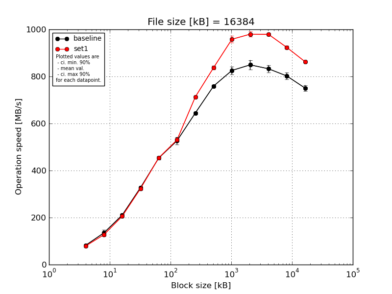
|
File size [kB] |
Block size [kB] |
| 4 |
8 |
16 |
32 |
64 |
128 |
256 |
512 |
1024 |
2048 |
4096 |
8192 |
16384 |
| baseline | 16384 | 83.25 | 144.88 | 216.67 | 331.89 | 463.28 | 551.61 | 652.74 | 765.7 | 828.12 | 869.79 | 851.97 | 824.06 | 764.38 |
| 16384 | 82.42 | 144.93 | 212.67 | 328.82 | 454.38 | 532.56 | 638.49 | 752.06 | 835.29 | 867.96 | 839.37 | 788.52 | 757.04 |
| 16384 | 82.64 | 143.68 | 208.71 | 327.76 | 451.96 | 516.18 | 646.54 | 762.48 | 836.6 | 830.18 | 838.84 | 788.77 | 735.09 |
| 16384 | 78.85 | 118.52 | 202.03 | 320.74 | 443.67 | 508.47 | 642.98 | 754.92 | 795.22 | 854.11 | 819.96 | 799.8 | 737.15 |
| 16384 | 82.39 | 122.71 | 212.15 | 325.99 | 452.53 | 524.62 | 642.6 | 760.79 | 831.86 | 824.36 | 812.97 | 809.15 | 758.87 |
| mean val. |
81.91 |
134.94 |
210.45 |
327.04 |
453.16 |
526.69 |
644.67 |
759.19 |
825.42 |
849.28 |
832.62 |
802.06 |
750.51 |
| standard dev. |
1.74 |
13.17 |
5.49 |
4.12 |
7.0 |
16.6 |
5.34 |
5.59 |
17.2 |
21.09 |
15.85 |
14.99 |
13.43 |
| ci. min. 90% |
80.25 |
122.39 |
205.22 |
323.11 |
446.49 |
510.86 |
639.58 |
753.86 |
809.02 |
829.18 |
817.51 |
787.76 |
737.71 |
| ci. max 90% |
83.57 |
147.5 |
215.68 |
330.97 |
459.84 |
542.51 |
649.76 |
764.52 |
841.82 |
869.39 |
847.73 |
816.36 |
763.31 |
| geom. mean |
81.89 |
134.41 |
210.39 |
327.02 |
453.12 |
526.48 |
644.65 |
759.17 |
825.27 |
849.07 |
832.5 |
801.95 |
750.41 |
| median |
82.42 |
143.68 |
212.15 |
327.76 |
452.53 |
524.62 |
642.98 |
760.79 |
831.86 |
854.11 |
838.84 |
799.8 |
757.04 |
| first quartile |
82.39 |
122.71 |
208.71 |
325.99 |
451.96 |
516.18 |
642.6 |
754.92 |
828.12 |
830.18 |
819.96 |
788.77 |
737.15 |
| third quartile |
82.64 |
144.88 |
212.67 |
328.82 |
454.38 |
532.56 |
646.54 |
762.48 |
835.29 |
867.96 |
839.37 |
809.15 |
758.87 |
| minimum |
78.85 |
118.52 |
202.03 |
320.74 |
443.67 |
508.47 |
638.49 |
752.06 |
795.22 |
824.36 |
812.97 |
788.52 |
735.09 |
| maximum |
83.25 |
144.93 |
216.67 |
331.89 |
463.28 |
551.61 |
652.74 |
765.7 |
836.6 |
869.79 |
851.97 |
824.06 |
764.38 |
| set1 | 16384 | 78.88 | 120.8 | 202.85 | 317.89 | 454.75 | 535.73 | 703.42 | 848.31 | 953.79 | 985.41 | 969.92 | 913.98 | 861.0 |
| 16384 | 78.75 | 138.32 | 201.46 | 320.63 | 456.02 | 518.38 | 714.54 | 825.55 | 950.67 | 968.52 | 979.25 | 931.15 | 859.34 |
| 16384 | 79.46 | 124.49 | 205.27 | 332.37 | 456.49 | 539.86 | 712.92 | 836.59 | 975.73 | 979.49 | 984.19 | 928.99 | 864.25 |
| 16384 | 78.92 | 120.46 | 216.52 | 325.14 | 453.91 | 531.95 | 717.9 | 837.39 | 939.8 | 968.34 | 976.26 | 917.33 | 864.31 |
| 16384 | 77.7 | 131.53 | 201.37 | 318.74 | 449.0 | 525.64 | 717.1 | 840.21 | 970.22 | 997.0 | 985.77 | 926.19 | 864.26 |
| mean val. |
78.74 |
127.12 |
205.5 |
322.96 |
454.04 |
530.31 |
713.18 |
837.61 |
958.04 |
979.75 |
979.08 |
923.53 |
862.63 |
| standard dev. |
0.64 |
7.68 |
6.36 |
5.96 |
3.0 |
8.48 |
5.81 |
8.18 |
14.72 |
12.1 |
6.38 |
7.49 |
2.32 |
| ci. min. 90% |
78.13 |
119.79 |
199.43 |
317.27 |
451.18 |
522.23 |
707.64 |
829.81 |
944.01 |
968.22 |
973.0 |
916.38 |
860.42 |
| ci. max 90% |
79.35 |
134.45 |
211.56 |
328.64 |
456.89 |
538.39 |
718.71 |
845.41 |
972.08 |
991.29 |
985.16 |
930.67 |
864.85 |
| geom. mean |
78.74 |
126.94 |
205.42 |
322.91 |
454.03 |
530.26 |
713.16 |
837.58 |
957.95 |
979.69 |
979.06 |
923.5 |
862.63 |
| median |
78.88 |
124.49 |
202.85 |
320.63 |
454.75 |
531.95 |
714.54 |
837.39 |
953.79 |
979.49 |
979.25 |
926.19 |
864.25 |
| first quartile |
78.75 |
120.8 |
201.46 |
318.74 |
453.91 |
525.64 |
712.92 |
836.59 |
950.67 |
968.52 |
976.26 |
917.33 |
861.0 |
| third quartile |
78.92 |
131.53 |
205.27 |
325.14 |
456.02 |
535.73 |
717.1 |
840.21 |
970.22 |
985.41 |
984.19 |
928.99 |
864.26 |
| minimum |
77.7 |
120.46 |
201.37 |
317.89 |
449.0 |
518.38 |
703.42 |
825.55 |
939.8 |
968.34 |
969.92 |
913.98 |
859.34 |
| maximum |
79.46 |
138.32 |
216.52 |
332.37 |
456.49 |
539.86 |
717.9 |
848.31 |
975.73 |
997.0 |
985.77 |
931.15 |
864.31 |
| baseline set1 difference |
-3.87 % |
-5.8 % |
-2.35 % |
-1.25 % |
0.19 % |
0.69 % |
10.63 % |
10.33 % |
16.07 % |
15.36 % |
17.59 % |
15.14 % |
14.94 % |
| ttest p-value |
0.0051 |
0.2844 |
0.2241 |
0.2431 |
0.8043 |
0.6751 |
0.0 |
0.0 |
0.0 |
0.0 |
0.0 |
0.0 |
0.0 |
| ttest equality |
DIFF |
SAME |
SAME |
SAME |
SAME |
SAME |
DIFF |
DIFF |
DIFF |
DIFF |
DIFF |
DIFF |
DIFF |
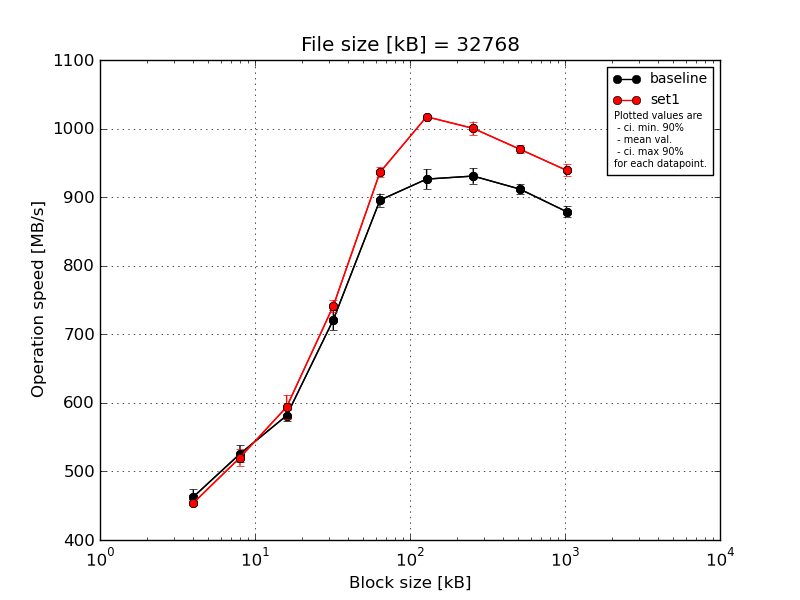
|
File size [kB] |
Block size [kB] |
| 64 |
128 |
256 |
512 |
1024 |
2048 |
4096 |
8192 |
16384 |
| baseline | 32768 | 477.73 | 539.67 | 595.65 | 743.03 | 888.13 | 936.11 | 943.65 | 916.07 | 887.21 |
| 32768 | 464.83 | 512.72 | 576.91 | 730.39 | 904.93 | 926.43 | 942.79 | 918.67 | 885.25 |
| 32768 | 465.65 | 538.94 | 576.59 | 703.47 | 883.27 | 943.76 | 918.88 | 906.21 | 875.03 |
| 32768 | 446.32 | 515.68 | 573.83 | 713.81 | 896.06 | 920.89 | 921.05 | 900.5 | 867.49 |
| 32768 | 459.57 | 521.36 | 584.65 | 714.84 | 905.7 | 904.36 | 927.43 | 917.01 | 879.03 |
| mean val. |
462.82 |
525.67 |
581.52 |
721.11 |
895.61 |
926.31 |
930.76 |
911.69 |
878.8 |
| standard dev. |
11.37 |
12.83 |
8.86 |
15.58 |
9.96 |
15.1 |
11.8 |
7.93 |
7.98 |
| ci. min. 90% |
451.98 |
513.44 |
573.08 |
706.26 |
886.12 |
911.92 |
919.51 |
904.13 |
871.2 |
| ci. max 90% |
473.66 |
537.9 |
589.97 |
735.96 |
905.11 |
940.71 |
942.01 |
919.25 |
886.41 |
| geom. mean |
462.71 |
525.55 |
581.47 |
720.97 |
895.57 |
926.21 |
930.7 |
911.66 |
878.77 |
| median |
464.83 |
521.36 |
576.91 |
714.84 |
896.06 |
926.43 |
927.43 |
916.07 |
879.03 |
| first quartile |
459.57 |
515.68 |
576.59 |
713.81 |
888.13 |
920.89 |
921.05 |
906.21 |
875.03 |
| third quartile |
465.65 |
538.94 |
584.65 |
730.39 |
904.93 |
936.11 |
942.79 |
917.01 |
885.25 |
| minimum |
446.32 |
512.72 |
573.83 |
703.47 |
883.27 |
904.36 |
918.88 |
900.5 |
867.49 |
| maximum |
477.73 |
539.67 |
595.65 |
743.03 |
905.7 |
943.76 |
943.65 |
918.67 |
887.21 |
| set1 | 32768 | 458.47 | 513.45 | 619.0 | 755.59 | 931.96 | 1019.75 | 998.56 | 960.41 | 943.67 |
| 32768 | 453.23 | 514.31 | 569.92 | 741.55 | 940.54 | 1016.87 | 989.76 | 973.09 | 929.69 |
| 32768 | 452.17 | 542.59 | 599.98 | 732.43 | 940.7 | 1013.84 | 1017.52 | 976.5 | 952.07 |
| 32768 | 455.2 | 518.25 | 583.23 | 736.8 | 943.12 | 1017.49 | 996.32 | 970.46 | 932.46 |
| 32768 | 450.7 | 512.88 | 597.86 | 739.94 | 924.78 | 1018.33 | 999.09 | 968.84 | 937.65 |
| mean val. |
453.95 |
520.3 |
594.0 |
741.26 |
936.22 |
1017.26 |
1000.25 |
969.86 |
939.11 |
| standard dev. |
3.01 |
12.64 |
18.52 |
8.73 |
7.67 |
2.19 |
10.34 |
6.02 |
9.0 |
| ci. min. 90% |
451.08 |
508.24 |
576.34 |
732.94 |
928.91 |
1015.17 |
990.39 |
964.12 |
930.53 |
| ci. max 90% |
456.82 |
532.35 |
611.65 |
749.59 |
943.53 |
1019.35 |
1010.11 |
975.6 |
947.69 |
| geom. mean |
453.94 |
520.18 |
593.77 |
741.22 |
936.2 |
1017.26 |
1000.21 |
969.85 |
939.07 |
| median |
453.23 |
514.31 |
597.86 |
739.94 |
940.54 |
1017.49 |
998.56 |
970.46 |
937.65 |
| first quartile |
452.17 |
513.45 |
583.23 |
736.8 |
931.96 |
1016.87 |
996.32 |
968.84 |
932.46 |
| third quartile |
455.2 |
518.25 |
599.98 |
741.55 |
940.7 |
1018.33 |
999.09 |
973.09 |
943.67 |
| minimum |
450.7 |
512.88 |
569.92 |
732.43 |
924.78 |
1013.84 |
989.76 |
960.41 |
929.69 |
| maximum |
458.47 |
542.59 |
619.0 |
755.59 |
943.12 |
1019.75 |
1017.52 |
976.5 |
952.07 |
| baseline set1 difference |
-1.92 % |
-1.02 % |
2.15 % |
2.79 % |
4.53 % |
9.82 % |
7.47 % |
6.38 % |
6.86 % |
| ttest p-value |
0.1302 |
0.5231 |
0.2113 |
0.0356 |
0.0001 |
0.0 |
0.0 |
0.0 |
0.0 |
| ttest equality |
SAME |
SAME |
SAME |
DIFF |
DIFF |
DIFF |
DIFF |
DIFF |
DIFF |
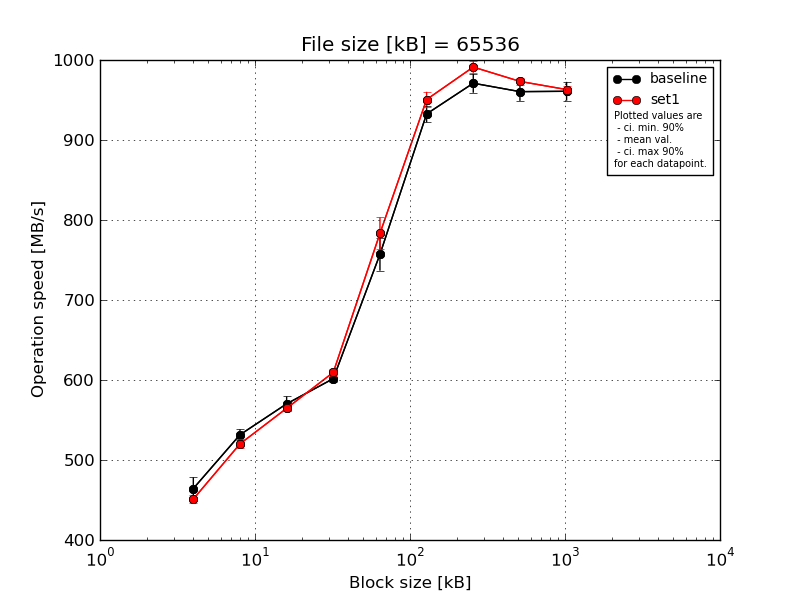
|
File size [kB] |
Block size [kB] |
| 64 |
128 |
256 |
512 |
1024 |
2048 |
4096 |
8192 |
16384 |
| baseline | 65536 | 485.87 | 539.22 | 578.26 | 604.65 | 778.68 | 943.95 | 984.0 | 965.0 | 971.49 |
| 65536 | 466.3 | 537.79 | 568.84 | 602.33 | 733.5 | 928.57 | 981.71 | 969.7 | 961.97 |
| 65536 | 466.41 | 527.69 | 572.39 | 598.38 | 780.9 | 920.82 | 963.52 | 956.16 | 971.85 |
| 65536 | 445.71 | 522.13 | 554.3 | 595.78 | 749.69 | 925.0 | 954.03 | 941.28 | 941.88 |
| 65536 | 457.4 | 530.89 | 577.33 | 607.47 | 742.85 | 944.59 | 971.71 | 970.11 | 957.28 |
| mean val. |
464.34 |
531.54 |
570.22 |
601.72 |
757.12 |
932.59 |
970.99 |
960.45 |
960.89 |
| standard dev. |
14.72 |
7.11 |
9.69 |
4.7 |
21.49 |
11.02 |
12.53 |
12.1 |
12.33 |
| ci. min. 90% |
450.3 |
524.77 |
560.99 |
597.24 |
736.63 |
922.09 |
959.05 |
948.92 |
949.14 |
| ci. max 90% |
478.37 |
538.32 |
579.46 |
606.21 |
777.61 |
943.09 |
982.94 |
971.98 |
972.65 |
| geom. mean |
464.15 |
531.51 |
570.16 |
601.71 |
756.88 |
932.54 |
970.93 |
960.39 |
960.83 |
| median |
466.3 |
530.89 |
572.39 |
602.33 |
749.69 |
928.57 |
971.71 |
965.0 |
961.97 |
| first quartile |
457.4 |
527.69 |
568.84 |
598.38 |
742.85 |
925.0 |
963.52 |
956.16 |
957.28 |
| third quartile |
466.41 |
537.79 |
577.33 |
604.65 |
778.68 |
943.95 |
981.71 |
969.7 |
971.49 |
| minimum |
445.71 |
522.13 |
554.3 |
595.78 |
733.5 |
920.82 |
954.03 |
941.28 |
941.88 |
| maximum |
485.87 |
539.22 |
578.26 |
607.47 |
780.9 |
944.59 |
984.0 |
970.11 |
971.85 |
| set1 | 65536 | 454.82 | 517.46 | 567.79 | 606.15 | 779.48 | 938.23 | 996.2 | 976.86 | 962.14 |
| 65536 | 451.58 | 527.97 | 566.14 | 604.92 | 810.98 | 960.34 | 984.06 | 975.76 | 965.17 |
| 65536 | 454.97 | 516.33 | 565.91 | 609.23 | 769.84 | 941.34 | 1001.97 | 977.13 | 970.01 |
| 65536 | 452.39 | 524.44 | 560.36 | 611.83 | 758.82 | 954.68 | 986.12 | 971.38 | 956.85 |
| 65536 | 441.94 | 514.47 | 562.9 | 615.59 | 797.25 | 958.4 | 987.53 | 965.19 | 961.08 |
| mean val. |
451.14 |
520.13 |
564.62 |
609.54 |
783.28 |
950.6 |
991.18 |
973.26 |
963.05 |
| standard dev. |
5.35 |
5.78 |
2.96 |
4.32 |
20.95 |
10.14 |
7.61 |
5.07 |
4.9 |
| ci. min. 90% |
446.04 |
514.62 |
561.8 |
605.42 |
763.3 |
940.94 |
983.92 |
968.43 |
958.38 |
| ci. max 90% |
456.25 |
525.64 |
567.44 |
613.66 |
803.25 |
960.26 |
998.43 |
978.1 |
967.72 |
| geom. mean |
451.12 |
520.11 |
564.61 |
609.53 |
783.05 |
950.56 |
991.15 |
973.25 |
963.04 |
| median |
452.39 |
517.46 |
565.91 |
609.23 |
779.48 |
954.68 |
987.53 |
975.76 |
962.14 |
| first quartile |
451.58 |
516.33 |
562.9 |
606.15 |
769.84 |
941.34 |
986.12 |
971.38 |
961.08 |
| third quartile |
454.82 |
524.44 |
566.14 |
611.83 |
797.25 |
958.4 |
996.2 |
976.86 |
965.17 |
| minimum |
441.94 |
514.47 |
560.36 |
604.92 |
758.82 |
938.23 |
984.06 |
965.19 |
956.85 |
| maximum |
454.97 |
527.97 |
567.79 |
615.59 |
810.98 |
960.34 |
1001.97 |
977.13 |
970.01 |
| baseline set1 difference |
-2.84 % |
-2.15 % |
-0.98 % |
1.3 % |
3.45 % |
1.93 % |
2.08 % |
1.33 % |
0.22 % |
| ttest p-value |
0.0964 |
0.0237 |
0.2512 |
0.0255 |
0.0872 |
0.0275 |
0.0152 |
0.0604 |
0.7258 |
| ttest equality |
DIFF |
DIFF |
SAME |
DIFF |
DIFF |
DIFF |
DIFF |
DIFF |
SAME |
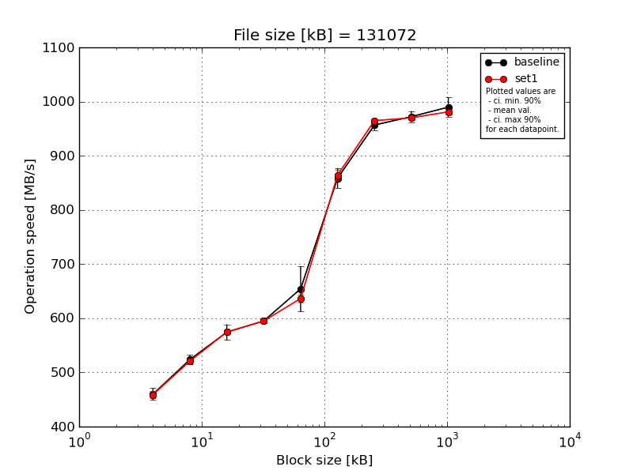
|
File size [kB] |
Block size [kB] |
| 64 |
128 |
256 |
512 |
1024 |
2048 |
4096 |
8192 |
16384 |
| baseline | 131072 | 469.2 | 523.13 | 587.82 | 598.59 | 643.48 | 884.66 | 966.96 | 979.61 | 1011.31 |
| 131072 | 450.03 | 514.68 | 561.06 | 587.81 | 645.08 | 846.8 | 965.28 | 967.82 | 1001.34 |
| 131072 | 471.73 | 538.0 | 587.14 | 598.22 | 731.04 | 856.83 | 953.62 | 971.89 | 970.03 |
| 131072 | 445.73 | 519.83 | 555.26 | 598.29 | 625.44 | 835.2 | 942.46 | 956.78 | 969.8 |
| 131072 | 462.78 | 523.32 | 580.14 | 592.48 | 626.14 | 869.44 | 955.2 | 984.75 | 996.26 |
| mean val. |
459.89 |
523.79 |
574.28 |
595.08 |
654.24 |
858.58 |
956.7 |
972.17 |
989.75 |
| standard dev. |
11.54 |
8.68 |
15.16 |
4.8 |
43.92 |
19.28 |
9.92 |
10.83 |
18.9 |
| ci. min. 90% |
448.89 |
515.52 |
559.83 |
590.5 |
612.36 |
840.2 |
947.25 |
961.84 |
971.73 |
| ci. max 90% |
470.9 |
532.07 |
588.74 |
599.65 |
696.11 |
876.97 |
966.16 |
982.5 |
1007.77 |
| geom. mean |
459.78 |
523.74 |
574.12 |
595.06 |
653.12 |
858.41 |
956.66 |
972.12 |
989.61 |
| median |
462.78 |
523.13 |
580.14 |
598.22 |
643.48 |
856.83 |
955.2 |
971.89 |
996.26 |
| first quartile |
450.03 |
519.83 |
561.06 |
592.48 |
626.14 |
846.8 |
953.62 |
967.82 |
970.03 |
| third quartile |
469.2 |
523.32 |
587.14 |
598.29 |
645.08 |
869.44 |
965.28 |
979.61 |
1001.34 |
| minimum |
445.73 |
514.68 |
555.26 |
587.81 |
625.44 |
835.2 |
942.46 |
956.78 |
969.8 |
| maximum |
471.73 |
538.0 |
587.82 |
598.59 |
731.04 |
884.66 |
966.96 |
984.75 |
1011.31 |
| set1 | 131072 | 471.17 | 522.58 | 572.08 | 594.13 | 644.57 | 876.27 | 967.97 | 966.81 | 983.88 |
| 131072 | 457.03 | 515.66 | 573.19 | 590.88 | 626.78 | 857.14 | 962.49 | 969.44 | 972.67 |
| 131072 | 459.6 | 520.12 | 573.01 | 601.05 | 642.65 | 855.15 | 966.88 | 976.15 | 986.05 |
| 131072 | 455.48 | 525.4 | 579.76 | 597.68 | 639.13 | 857.82 | 965.11 | 967.32 | 984.91 |
| 131072 | 451.56 | 520.59 | 574.81 | 591.02 | 628.87 | 874.75 | 961.33 | 970.58 | 977.76 |
| mean val. |
458.97 |
520.87 |
574.57 |
594.95 |
636.4 |
864.23 |
964.75 |
970.06 |
981.05 |
| standard dev. |
7.42 |
3.58 |
3.07 |
4.4 |
8.1 |
10.36 |
2.82 |
3.74 |
5.68 |
| ci. min. 90% |
451.9 |
517.46 |
571.65 |
590.76 |
628.68 |
854.35 |
962.07 |
966.5 |
975.64 |
| ci. max 90% |
466.04 |
524.28 |
577.49 |
599.14 |
644.12 |
874.1 |
967.44 |
973.62 |
986.47 |
| geom. mean |
458.92 |
520.86 |
574.56 |
594.94 |
636.36 |
864.18 |
964.75 |
970.05 |
981.04 |
| median |
457.03 |
520.59 |
573.19 |
594.13 |
639.13 |
857.82 |
965.11 |
969.44 |
983.88 |
| first quartile |
455.48 |
520.12 |
573.01 |
591.02 |
628.87 |
857.14 |
962.49 |
967.32 |
977.76 |
| third quartile |
459.6 |
522.58 |
574.81 |
597.68 |
642.65 |
874.75 |
966.88 |
970.58 |
984.91 |
| minimum |
451.56 |
515.66 |
572.08 |
590.88 |
626.78 |
855.15 |
961.33 |
966.81 |
972.67 |
| maximum |
471.17 |
525.4 |
579.76 |
601.05 |
644.57 |
876.27 |
967.97 |
976.15 |
986.05 |
| baseline set1 difference |
-0.2 % |
-0.56 % |
0.05 % |
-0.02 % |
-2.73 % |
0.66 % |
0.84 % |
-0.22 % |
-0.88 % |
| ttest p-value |
0.8838 |
0.5063 |
0.9679 |
0.9669 |
0.398 |
0.5802 |
0.119 |
0.6912 |
0.3533 |
| ttest equality |
SAME |
SAME |
SAME |
SAME |
SAME |
SAME |
SAME |
SAME |
SAME |
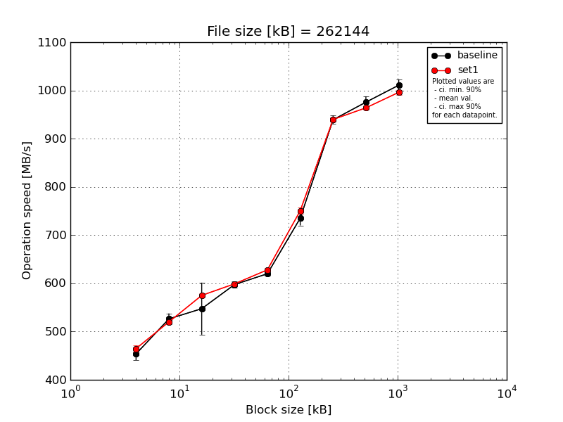
|
File size [kB] |
Block size [kB] |
| 64 |
128 |
256 |
512 |
1024 |
2048 |
4096 |
8192 |
16384 |
| baseline | 262144 | 477.36 | 540.7 | 576.52 | 600.63 | 625.95 | 738.68 | 940.99 | 974.63 | 1013.56 |
| 262144 | 450.33 | 537.49 | 565.98 | 605.15 | 618.55 | 754.91 | 946.1 | 986.53 | 1019.89 |
| 262144 | 450.75 | 517.09 | 447.14 | 591.95 | 623.96 | 716.49 | 945.87 | 967.48 | 1010.95 |
| 262144 | 444.04 | 515.63 | 564.79 | 589.35 | 614.09 | 721.94 | 923.93 | 959.8 | 989.38 |
| 262144 | 446.37 | 520.3 | 582.92 | 600.48 | 617.11 | 743.36 | 938.88 | 989.7 | 1020.38 |
| mean val. |
453.77 |
526.24 |
547.47 |
597.51 |
619.93 |
735.07 |
939.15 |
975.63 |
1010.83 |
| standard dev. |
13.48 |
11.91 |
56.59 |
6.61 |
4.91 |
15.76 |
9.07 |
12.6 |
12.66 |
| ci. min. 90% |
440.92 |
514.89 |
493.52 |
591.21 |
615.25 |
720.05 |
930.51 |
963.62 |
998.77 |
| ci. max 90% |
466.62 |
537.6 |
601.42 |
603.81 |
624.61 |
750.1 |
947.8 |
987.64 |
1022.9 |
| geom. mean |
453.61 |
526.14 |
544.89 |
597.48 |
619.92 |
734.94 |
939.12 |
975.56 |
1010.77 |
| median |
450.33 |
520.3 |
565.98 |
600.48 |
618.55 |
738.68 |
940.99 |
974.63 |
1013.56 |
| first quartile |
446.37 |
517.09 |
564.79 |
591.95 |
617.11 |
721.94 |
938.88 |
967.48 |
1010.95 |
| third quartile |
450.75 |
537.49 |
576.52 |
600.63 |
623.96 |
743.36 |
945.87 |
986.53 |
1019.89 |
| minimum |
444.04 |
515.63 |
447.14 |
589.35 |
614.09 |
716.49 |
923.93 |
959.8 |
989.38 |
| maximum |
477.36 |
540.7 |
582.92 |
605.15 |
625.95 |
754.91 |
946.1 |
989.7 |
1020.38 |
| set1 | 262144 | 476.1 | 519.65 | 581.64 | 604.01 | 632.1 | 746.5 | 943.26 | 966.71 | 998.89 |
| 262144 | 461.76 | 519.56 | 572.28 | 599.31 | 626.13 | 754.65 | 941.15 | 957.87 | 994.94 |
| 262144 | 466.33 | 519.99 | 577.11 | 598.03 | 632.09 | 758.56 | 936.57 | 970.38 | 1002.66 |
| 262144 | 461.83 | 521.67 | 573.44 | 598.53 | 624.82 | 741.62 | 934.32 | 961.76 | 989.55 |
| 262144 | 457.71 | 519.16 | 570.54 | 595.16 | 624.8 | 751.86 | 943.49 | 962.87 | 993.99 |
| mean val. |
464.75 |
520.01 |
575.0 |
599.01 |
627.99 |
750.64 |
939.76 |
963.92 |
996.01 |
| standard dev. |
7.04 |
0.98 |
4.42 |
3.2 |
3.79 |
6.69 |
4.12 |
4.79 |
4.99 |
| ci. min. 90% |
458.04 |
519.08 |
570.79 |
595.95 |
624.38 |
744.26 |
935.83 |
959.35 |
991.25 |
| ci. max 90% |
471.46 |
520.94 |
579.22 |
602.06 |
631.6 |
757.01 |
943.69 |
968.49 |
1000.76 |
| geom. mean |
464.71 |
520.0 |
574.99 |
599.0 |
627.98 |
750.61 |
939.75 |
963.91 |
996.0 |
| median |
461.83 |
519.65 |
573.44 |
598.53 |
626.13 |
751.86 |
941.15 |
962.87 |
994.94 |
| first quartile |
461.76 |
519.56 |
572.28 |
598.03 |
624.82 |
746.5 |
936.57 |
961.76 |
993.99 |
| third quartile |
466.33 |
519.99 |
577.11 |
599.31 |
632.09 |
754.65 |
943.26 |
966.71 |
998.89 |
| minimum |
457.71 |
519.16 |
570.54 |
595.16 |
624.8 |
741.62 |
934.32 |
957.87 |
989.55 |
| maximum |
476.1 |
521.67 |
581.64 |
604.01 |
632.1 |
758.56 |
943.49 |
970.38 |
1002.66 |
| baseline set1 difference |
2.42 % |
-1.19 % |
5.03 % |
0.25 % |
1.3 % |
2.12 % |
0.06 % |
-1.2 % |
-1.47 % |
| ttest p-value |
0.1452 |
0.2766 |
0.3097 |
0.6606 |
0.0197 |
0.0765 |
0.895 |
0.088 |
0.0407 |
| ttest equality |
SAME |
SAME |
SAME |
SAME |
DIFF |
DIFF |
SAME |
DIFF |
DIFF |
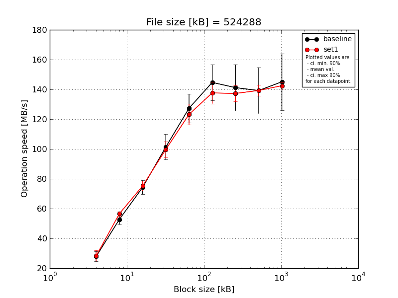
|
File size [kB] |
Block size [kB] |
| 64 |
128 |
256 |
512 |
1024 |
2048 |
4096 |
8192 |
16384 |
| baseline | 524288 | 21.97 | 47.11 | 66.05 | 87.4 | 113.02 | 129.42 | 114.48 | 110.96 | 111.42 |
| 524288 | 29.42 | 54.03 | 76.39 | 106.3 | 130.04 | 145.48 | 144.62 | 146.73 | 162.31 |
| 524288 | 30.14 | 56.05 | 77.36 | 110.55 | 140.41 | 162.72 | 156.91 | 150.67 | 154.52 |
| 524288 | 30.49 | 54.85 | 77.95 | 103.8 | 130.0 | 148.62 | 150.28 | 147.46 | 153.01 |
| 524288 | 27.39 | 51.97 | 73.32 | 98.79 | 123.46 | 137.23 | 139.7 | 140.38 | 144.35 |
| mean val. |
27.88 |
52.8 |
74.21 |
101.37 |
127.39 |
144.69 |
141.2 |
139.24 |
145.12 |
| standard dev. |
3.52 |
3.51 |
4.9 |
8.89 |
10.07 |
12.55 |
16.26 |
16.24 |
19.89 |
| ci. min. 90% |
24.53 |
49.45 |
69.54 |
92.89 |
117.79 |
132.73 |
125.7 |
123.76 |
126.16 |
| ci. max 90% |
31.24 |
56.15 |
78.89 |
109.85 |
136.99 |
156.66 |
156.7 |
154.72 |
164.09 |
| geom. mean |
27.69 |
52.7 |
74.08 |
101.04 |
127.07 |
144.26 |
140.39 |
138.4 |
143.91 |
| median |
29.42 |
54.03 |
76.39 |
103.8 |
130.0 |
145.48 |
144.62 |
146.73 |
153.01 |
| first quartile |
27.39 |
51.97 |
73.32 |
98.79 |
123.46 |
137.23 |
139.7 |
140.38 |
144.35 |
| third quartile |
30.14 |
54.85 |
77.36 |
106.3 |
130.04 |
148.62 |
150.28 |
147.46 |
154.52 |
| minimum |
21.97 |
47.11 |
66.05 |
87.4 |
113.02 |
129.42 |
114.48 |
110.96 |
111.42 |
| maximum |
30.49 |
56.05 |
77.95 |
110.55 |
140.41 |
162.72 |
156.91 |
150.67 |
162.31 |
| set1 | 524288 | 21.71 | 54.47 | 70.3 | 91.97 | 112.77 | 126.27 | 132.23 | 134.15 | 141.81 |
| 524288 | 30.91 | 56.37 | 78.28 | 104.29 | 131.6 | 146.0 | 140.39 | 139.0 | 146.15 |
| 524288 | 30.99 | 58.4 | 75.06 | 99.71 | 123.23 | 138.46 | 136.05 | 141.28 | 141.2 |
| 524288 | 30.68 | 57.69 | 78.78 | 105.74 | 128.58 | 142.31 | 145.44 | 144.57 | 143.45 |
| 524288 | 26.95 | 56.01 | 73.54 | 96.89 | 120.11 | 135.19 | 132.23 | 137.5 | 139.87 |
| mean val. |
28.25 |
56.59 |
75.19 |
99.72 |
123.26 |
137.65 |
137.27 |
139.3 |
142.49 |
| standard dev. |
4.03 |
1.53 |
3.5 |
5.6 |
7.38 |
7.54 |
5.67 |
3.92 |
2.41 |
| ci. min. 90% |
24.41 |
55.13 |
71.85 |
94.39 |
116.22 |
130.45 |
131.86 |
135.56 |
140.19 |
| ci. max 90% |
32.09 |
58.05 |
78.53 |
105.06 |
130.29 |
144.84 |
142.67 |
143.04 |
144.8 |
| geom. mean |
28.0 |
56.57 |
75.13 |
99.6 |
123.08 |
137.48 |
137.18 |
139.26 |
142.48 |
| median |
30.68 |
56.37 |
75.06 |
99.71 |
123.23 |
138.46 |
136.05 |
139.0 |
141.81 |
| first quartile |
26.95 |
56.01 |
73.54 |
96.89 |
120.11 |
135.19 |
132.23 |
137.5 |
141.2 |
| third quartile |
30.91 |
57.69 |
78.28 |
104.29 |
128.58 |
142.31 |
140.39 |
141.28 |
143.45 |
| minimum |
21.71 |
54.47 |
70.3 |
91.97 |
112.77 |
126.27 |
132.23 |
134.15 |
139.87 |
| maximum |
30.99 |
58.4 |
78.78 |
105.74 |
131.6 |
146.0 |
145.44 |
144.57 |
146.15 |
| baseline set1 difference |
1.31 % |
7.18 % |
1.32 % |
-1.62 % |
-3.24 % |
-4.87 % |
-2.78 % |
0.04 % |
-1.81 % |
| ttest p-value |
0.8826 |
0.0579 |
0.7256 |
0.7351 |
0.4803 |
0.3131 |
0.6234 |
0.9937 |
0.7769 |
| ttest equality |
SAME |
DIFF |
SAME |
SAME |
SAME |
SAME |
SAME |
SAME |
SAME |
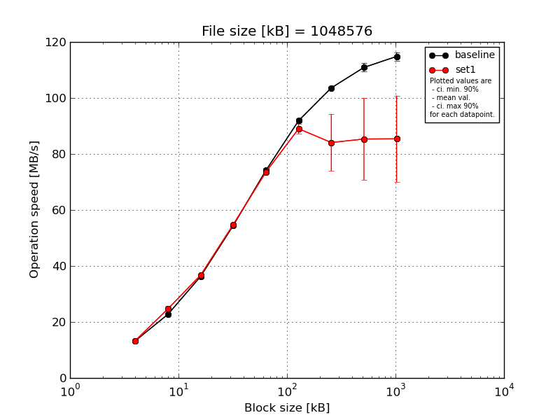
|
File size [kB] |
Block size [kB] |
| 64 |
128 |
256 |
512 |
1024 |
2048 |
4096 |
8192 |
16384 |
| baseline | 1048576 | 13.43 | 22.76 | 36.09 | 55.01 | 73.09 | 92.4 | 103.18 | 109.33 | 113.66 |
| 1048576 | 13.22 | 22.65 | 36.1 | 54.03 | 73.79 | 91.5 | 103.61 | 110.2 | 113.34 |
| 1048576 | 13.17 | 22.95 | 36.28 | 54.38 | 74.55 | 92.6 | 103.88 | 111.4 | 114.82 |
| 1048576 | 13.32 | 22.79 | 36.75 | 54.63 | 75.19 | 92.33 | 103.27 | 113.37 | 117.24 |
| 1048576 | 13.3 | 22.67 | 36.28 | 54.5 | 74.24 | 90.76 | 104.14 | 110.32 | 115.15 |
| mean val. |
13.29 |
22.76 |
36.3 |
54.51 |
74.17 |
91.92 |
103.61 |
110.92 |
114.84 |
| standard dev. |
0.1 |
0.12 |
0.27 |
0.36 |
0.79 |
0.77 |
0.41 |
1.55 |
1.54 |
| ci. min. 90% |
13.19 |
22.65 |
36.04 |
54.17 |
73.42 |
91.18 |
103.23 |
109.44 |
113.37 |
| ci. max 90% |
13.38 |
22.87 |
36.55 |
54.85 |
74.93 |
92.65 |
104.0 |
112.4 |
116.31 |
| geom. mean |
13.29 |
22.76 |
36.3 |
54.51 |
74.17 |
91.92 |
103.61 |
110.91 |
114.83 |
| median |
13.3 |
22.76 |
36.28 |
54.5 |
74.24 |
92.33 |
103.61 |
110.32 |
114.82 |
| first quartile |
13.22 |
22.67 |
36.1 |
54.38 |
73.79 |
91.5 |
103.27 |
110.2 |
113.66 |
| third quartile |
13.32 |
22.79 |
36.28 |
54.63 |
74.55 |
92.4 |
103.88 |
111.4 |
115.15 |
| minimum |
13.17 |
22.65 |
36.09 |
54.03 |
73.09 |
90.76 |
103.18 |
109.33 |
113.34 |
| maximum |
13.43 |
22.95 |
36.75 |
55.01 |
75.19 |
92.6 |
104.14 |
113.37 |
117.24 |
| set1 | 1048576 | 13.68 | 25.24 | 36.65 | 54.91 | 73.34 | 87.67 | 77.43 | 75.82 | 75.55 |
| 1048576 | 13.28 | 25.27 | 36.73 | 54.96 | 73.38 | 89.19 | 82.8 | 82.41 | 80.87 |
| 1048576 | 13.22 | 25.12 | 37.04 | 54.71 | 73.83 | 87.47 | 77.4 | 77.18 | 77.51 |
| 1048576 | 13.29 | 22.94 | 36.71 | 54.66 | 73.91 | 92.06 | 102.65 | 112.55 | 114.13 |
| 1048576 | 13.38 | 24.96 | 36.71 | 55.03 | 73.52 | 88.74 | 80.21 | 78.82 | 79.05 |
| mean val. |
13.37 |
24.71 |
36.76 |
54.85 |
73.6 |
89.03 |
84.1 |
85.36 |
85.42 |
| standard dev. |
0.18 |
0.99 |
0.15 |
0.16 |
0.26 |
1.84 |
10.61 |
15.4 |
16.17 |
| ci. min. 90% |
13.2 |
23.76 |
36.62 |
54.7 |
73.35 |
87.27 |
73.98 |
70.68 |
70.01 |
| ci. max 90% |
13.55 |
25.65 |
36.91 |
55.0 |
73.84 |
90.78 |
94.21 |
100.04 |
100.83 |
| geom. mean |
13.37 |
24.69 |
36.76 |
54.85 |
73.6 |
89.01 |
83.61 |
84.38 |
84.36 |
| median |
13.29 |
25.12 |
36.71 |
54.91 |
73.52 |
88.74 |
80.21 |
78.82 |
79.05 |
| first quartile |
13.28 |
24.96 |
36.71 |
54.71 |
73.38 |
87.67 |
77.43 |
77.18 |
77.51 |
| third quartile |
13.38 |
25.24 |
36.73 |
54.96 |
73.83 |
89.19 |
82.8 |
82.41 |
80.87 |
| minimum |
13.22 |
22.94 |
36.65 |
54.66 |
73.34 |
87.47 |
77.4 |
75.82 |
75.55 |
| maximum |
13.68 |
25.27 |
37.04 |
55.03 |
73.91 |
92.06 |
102.65 |
112.55 |
114.13 |
| baseline set1 difference |
0.61 % |
8.54 % |
1.28 % |
0.63 % |
-0.78 % |
-3.15 % |
-18.84 % |
-23.05 % |
-25.62 % |
| ttest p-value |
0.4085 |
0.0025 |
0.0097 |
0.0872 |
0.161 |
0.0119 |
0.0034 |
0.0061 |
0.0037 |
| ttest equality |
SAME |
DIFF |
DIFF |
DIFF |
SAME |
DIFF |
DIFF |
DIFF |
DIFF |
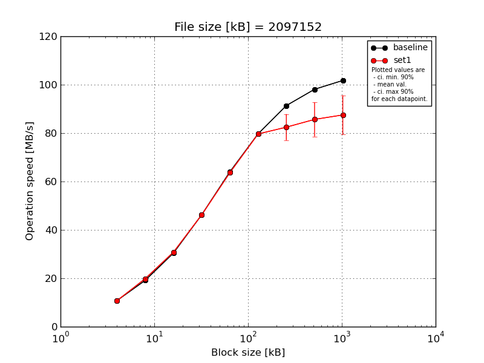
|
File size [kB] |
Block size [kB] |
| 64 |
128 |
256 |
512 |
1024 |
2048 |
4096 |
8192 |
16384 |
| baseline | 2097152 | 10.83 | 19.18 | 30.36 | 46.23 | 64.07 | 79.61 | 91.16 | 98.1 | 101.86 |
| 2097152 | 10.82 | 19.14 | 30.52 | 46.41 | 64.12 | 80.07 | 91.8 | 97.63 | 102.71 |
| 2097152 | 10.78 | 19.09 | 30.4 | 46.0 | 63.84 | 78.92 | 90.29 | 97.83 | 100.98 |
| 2097152 | 10.74 | 19.11 | 30.41 | 46.1 | 63.87 | 80.15 | 91.94 | 98.69 | 101.65 |
| 2097152 | 10.82 | 19.18 | 30.41 | 46.32 | 64.09 | 79.84 | 91.67 | 98.3 | 101.57 |
| mean val. |
10.8 |
19.14 |
30.42 |
46.21 |
64.0 |
79.72 |
91.37 |
98.11 |
101.76 |
| standard dev. |
0.04 |
0.04 |
0.06 |
0.16 |
0.13 |
0.5 |
0.68 |
0.41 |
0.63 |
| ci. min. 90% |
10.76 |
19.1 |
30.36 |
46.06 |
63.87 |
79.24 |
90.73 |
97.71 |
101.16 |
| ci. max 90% |
10.83 |
19.18 |
30.48 |
46.37 |
64.13 |
80.19 |
92.01 |
98.5 |
102.35 |
| geom. mean |
10.8 |
19.14 |
30.42 |
46.21 |
64.0 |
79.71 |
91.37 |
98.11 |
101.75 |
| median |
10.82 |
19.14 |
30.41 |
46.23 |
64.07 |
79.84 |
91.67 |
98.1 |
101.65 |
| first quartile |
10.78 |
19.11 |
30.4 |
46.1 |
63.87 |
79.61 |
91.16 |
97.83 |
101.57 |
| third quartile |
10.82 |
19.18 |
30.41 |
46.32 |
64.09 |
80.07 |
91.8 |
98.3 |
101.86 |
| minimum |
10.74 |
19.09 |
30.36 |
46.0 |
63.84 |
78.92 |
90.29 |
97.63 |
100.98 |
| maximum |
10.83 |
19.18 |
30.52 |
46.41 |
64.12 |
80.15 |
91.94 |
98.69 |
102.71 |
| set1 | 2097152 | 10.76 | 20.1 | 30.69 | 46.15 | 63.52 | 79.34 | 79.21 | 82.19 | 82.38 |
| 2097152 | 10.77 | 19.28 | 30.65 | 46.09 | 63.9 | 80.43 | 92.16 | 98.21 | 101.97 |
| 2097152 | 10.76 | 19.7 | 31.05 | 46.11 | 63.39 | 79.7 | 82.84 | 86.49 | 88.24 |
| 2097152 | 10.79 | 20.16 | 30.66 | 46.19 | 63.54 | 79.47 | 78.99 | 80.9 | 83.19 |
| 2097152 | 10.75 | 20.03 | 31.01 | 46.4 | 63.83 | 79.31 | 79.08 | 80.51 | 81.77 |
| mean val. |
10.77 |
19.85 |
30.81 |
46.19 |
63.64 |
79.65 |
82.45 |
85.66 |
87.51 |
| standard dev. |
0.02 |
0.37 |
0.2 |
0.12 |
0.22 |
0.46 |
5.66 |
7.4 |
8.48 |
| ci. min. 90% |
10.75 |
19.5 |
30.62 |
46.07 |
63.43 |
79.21 |
77.06 |
78.6 |
79.43 |
| ci. max 90% |
10.78 |
20.2 |
31.0 |
46.31 |
63.84 |
80.09 |
87.85 |
92.72 |
95.59 |
| geom. mean |
10.77 |
19.85 |
30.81 |
46.19 |
63.64 |
79.65 |
82.31 |
85.42 |
87.2 |
| median |
10.76 |
20.03 |
30.69 |
46.15 |
63.54 |
79.47 |
79.21 |
82.19 |
83.19 |
| first quartile |
10.76 |
19.7 |
30.66 |
46.11 |
63.52 |
79.34 |
79.08 |
80.9 |
82.38 |
| third quartile |
10.77 |
20.1 |
31.01 |
46.19 |
63.83 |
79.7 |
82.84 |
86.49 |
88.24 |
| minimum |
10.75 |
19.28 |
30.65 |
46.09 |
63.39 |
79.31 |
78.99 |
80.51 |
81.77 |
| maximum |
10.79 |
20.16 |
31.05 |
46.4 |
63.9 |
80.43 |
92.16 |
98.21 |
101.97 |
| baseline set1 difference |
-0.3 % |
3.71 % |
1.29 % |
-0.05 % |
-0.57 % |
-0.08 % |
-9.76 % |
-12.69 % |
-14.0 % |
| ttest p-value |
0.1219 |
0.0027 |
0.0031 |
0.7895 |
0.0134 |
0.8311 |
0.0081 |
0.0056 |
0.0057 |
| ttest equality |
SAME |
DIFF |
DIFF |
SAME |
DIFF |
SAME |
DIFF |
DIFF |
DIFF |
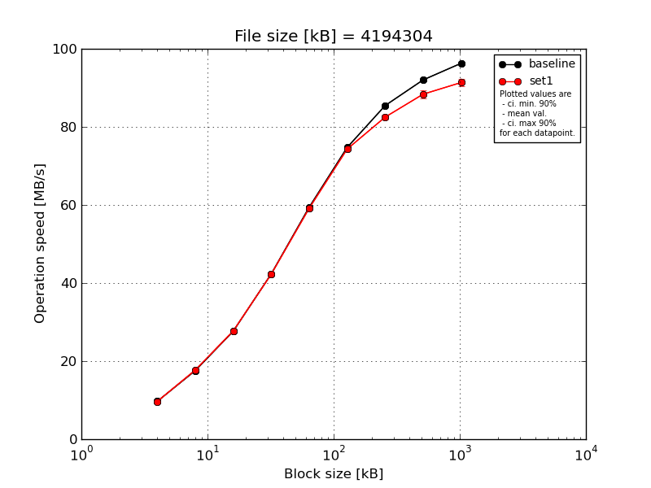
|
File size [kB] |
Block size [kB] |
| 64 |
128 |
256 |
512 |
1024 |
2048 |
4096 |
8192 |
16384 |
| baseline | 4194304 | 9.71 | 17.57 | 27.67 | 42.42 | 59.45 | 74.78 | 85.67 | 92.01 | 95.98 |
| 4194304 | 9.69 | 17.58 | 27.67 | 42.38 | 59.28 | 74.69 | 85.4 | 91.89 | 96.07 |
| 4194304 | 9.71 | 17.56 | 27.67 | 42.23 | 59.54 | 74.69 | 85.55 | 91.98 | 96.51 |
| 4194304 | 9.69 | 17.58 | 27.65 | 42.31 | 59.43 | 74.82 | 85.35 | 92.29 | 96.43 |
| 4194304 | 9.7 | 17.58 | 27.67 | 42.3 | 59.43 | 74.68 | 85.3 | 91.96 | 96.43 |
| mean val. |
9.7 |
17.58 |
27.66 |
42.33 |
59.43 |
74.73 |
85.46 |
92.03 |
96.29 |
| standard dev. |
0.01 |
0.01 |
0.01 |
0.07 |
0.1 |
0.06 |
0.15 |
0.15 |
0.24 |
| ci. min. 90% |
9.69 |
17.57 |
27.66 |
42.26 |
59.33 |
74.67 |
85.31 |
91.88 |
96.06 |
| ci. max 90% |
9.71 |
17.58 |
27.67 |
42.4 |
59.52 |
74.79 |
85.6 |
92.17 |
96.51 |
| geom. mean |
9.7 |
17.58 |
27.66 |
42.33 |
59.43 |
74.73 |
85.45 |
92.03 |
96.29 |
| median |
9.7 |
17.58 |
27.67 |
42.31 |
59.43 |
74.69 |
85.4 |
91.98 |
96.43 |
| first quartile |
9.69 |
17.57 |
27.67 |
42.3 |
59.43 |
74.69 |
85.35 |
91.96 |
96.07 |
| third quartile |
9.71 |
17.58 |
27.67 |
42.38 |
59.45 |
74.78 |
85.55 |
92.01 |
96.43 |
| minimum |
9.69 |
17.56 |
27.65 |
42.23 |
59.28 |
74.68 |
85.3 |
91.89 |
95.98 |
| maximum |
9.71 |
17.58 |
27.67 |
42.42 |
59.54 |
74.82 |
85.67 |
92.29 |
96.51 |
| set1 | 4194304 | 9.68 | 17.71 | 27.82 | 42.28 | 59.16 | 74.48 | 82.84 | 88.3 | 91.61 |
| 4194304 | 9.7 | 17.67 | 27.65 | 42.25 | 59.05 | 74.44 | 83.38 | 89.88 | 92.88 |
| 4194304 | 9.68 | 17.79 | 27.79 | 42.26 | 59.17 | 74.36 | 81.47 | 86.93 | 90.0 |
| 4194304 | 9.68 | 17.71 | 27.72 | 42.27 | 59.12 | 74.24 | 82.41 | 88.67 | 91.5 |
| 4194304 | 9.69 | 17.72 | 27.71 | 42.28 | 59.25 | 74.05 | 82.39 | 88.07 | 90.8 |
| mean val. |
9.69 |
17.72 |
27.74 |
42.27 |
59.15 |
74.31 |
82.5 |
88.37 |
91.36 |
| standard dev. |
0.01 |
0.04 |
0.07 |
0.01 |
0.07 |
0.18 |
0.7 |
1.07 |
1.07 |
| ci. min. 90% |
9.68 |
17.68 |
27.67 |
42.25 |
59.08 |
74.15 |
81.83 |
87.36 |
90.34 |
| ci. max 90% |
9.69 |
17.76 |
27.8 |
42.28 |
59.22 |
74.48 |
83.17 |
89.39 |
92.38 |
| geom. mean |
9.69 |
17.72 |
27.74 |
42.27 |
59.15 |
74.31 |
82.5 |
88.37 |
91.35 |
| median |
9.68 |
17.71 |
27.72 |
42.27 |
59.16 |
74.36 |
82.41 |
88.3 |
91.5 |
| first quartile |
9.68 |
17.71 |
27.71 |
42.26 |
59.12 |
74.24 |
82.39 |
88.07 |
90.8 |
| third quartile |
9.69 |
17.72 |
27.79 |
42.28 |
59.17 |
74.44 |
82.84 |
88.67 |
91.61 |
| minimum |
9.68 |
17.67 |
27.65 |
42.25 |
59.05 |
74.05 |
81.47 |
86.93 |
90.0 |
| maximum |
9.7 |
17.79 |
27.82 |
42.28 |
59.25 |
74.48 |
83.38 |
89.88 |
92.88 |
| baseline set1 difference |
-0.13 % |
0.82 % |
0.27 % |
-0.14 % |
-0.46 % |
-0.56 % |
-3.46 % |
-3.97 % |
-5.12 % |
| ttest p-value |
0.0618 |
0.0001 |
0.0407 |
0.111 |
0.0009 |
0.001 |
0.0 |
0.0001 |
0.0 |
| ttest equality |
DIFF |
DIFF |
DIFF |
SAME |
DIFF |
DIFF |
DIFF |
DIFF |
DIFF |